← 回股市觀察
盤中觀察 每日盤中觀察
2026/10/16 12:30 即時快照 · 當日盤中成交金額前 50 檔（上市 35＋上櫃 15）· 公開資料整理
47,215.07
加權指數 +245.20 點（+0.52%）
這是盤中快照，不是收盤結果。資料時間 2026-10-16 12:30:53（TWSE MIS 即時行情，上市／上櫃皆 delay=0）。
13:30 收盤（含最後一盤集合競價）會再變動；量能是以「已過交易時間比例」推估（尾盤大量時會低估）；
技術面標籤是把盤中現價代入原本以收盤價設計的規則（日線歷史只到前一交易日 9/14）。
統計範圍：候選池＝20261015 與 20261014 收盤成交值前段（上市 250／上櫃 130）取聯集，共 421 檔；再以今日盤中累計成交金額排序取
上市前 35＋上櫃前 15。漲跌家數是候選池內的數字，不是全市場（即時全市場家數證交所沒有開放端點）。
本頁為公開資料的整理與觀察，不構成投資建議，不報牌、不預測、不下買賣決策。
時程紀錄（本日盤中分析）▾ 點擊展開▴ 點擊收合
| 階段 | 時間 |
|---|
| 任務開始 | 由排程自動觸發（週一～週五 12:30） |
| 分析腳本執行 | 12:30:11 → 12:30:53（41.8 秒） |
| 資料快照時間 | 2026-10-16 12:30:53（行情時間戳 12:30:38） |
| 本頁產出 | 見頁尾版本時間 |
逐階段 log：
| 12:30:11 | START 盤中分析開始 |
| 12:30:11 | ① 抓即時指數（tse_t00 / otc_o00） |
| 12:30:13 | ② 建立候選池（20261015 與 20261014 成交值前段，上市＋上櫃） |
| 12:30:14 | 候選池共 421 檔 |
| 12:30:14 | ③ 抓即時候選池行情 |
| 12:30:52 | 取得即時報價 421 檔 |
| 12:30:52 | 候選池漲跌：漲 270／跌 132／平盤 19（快照時間 12:30:38） |
| 12:30:52 | ④ 選出 70 檔（上市 50＋上櫃 20），門檻 20.97 億 |
| 12:30:52 | ⑤ 抓日線歷史並算技術面 |
| 12:30:53 | ⑥ 產出（70 檔） |
K 線圖怎麼看：每一檔都附 K 線圖 —— 黃圈是轉折低點、粉圈是轉折高點（
虛線圈代表還沒確認的轉折）、藍線是月線（20 日均線）；頸線取最近兩個轉折低點之間的最高轉折高點，
突破頸線才會標示。
圖上另有兩條水平虛線、左側標數值：高點頸線（紅，最近兩個轉折低點之間的最高轉折高點）與低點頸線（綠，最近兩個轉折高點之間的最低轉折低點）；樣本不足就不畫。
紅色 K 棒＝收盤高於開盤、綠色＝收盤低於開盤。
大盤趨勢快篩（加權指數）（盤中近似） 資料日 2026/10/15・來源：證交所公開資料
主狀態：區間整理／均線糾結
前一交易日對照（10/14）：站上月線、月線向上（量比 20 1.06） → 今日區間整理／均線糾結（量比 20 1.50）
指標、數值、判定（點開看 12 項明細：均線位置／排列、月線方向、頸線、轉折結構、位階、量價…）
加權指數今天跌 1,655.96 點（-3.41%），收 46,969.87、跌破月線 48,041.24；月線還在上彎，MA5 這條短均還沒收復，離高點頸線 49,285.22 還差 4.70%。
- 均線位置：4 條均線站上 1 條；沒站上的是 MA5 48,510.48（收盤比它低 3.18%）、MA10 48,872.26（收盤比它低 3.89%）、MA20 48,041.24（收盤比它低 2.23%）
- 月線方向：月線 MA20 現在 48,041.24，比 5 個交易日前高 463.77 點 → 上彎
- 量能：集中市場成交 14,357.6 億，比 5 日均量大不少（1.32 倍）、比 20 日均量大不少（1.50 倍）
- 關鍵價位：高點頸線 49,285.22，還差 4.70%；低點頸線 44,639.15，還在下方 5.22%
- 大小型股：加權 -3.41%、櫃買 -5.53%，兩邊同向
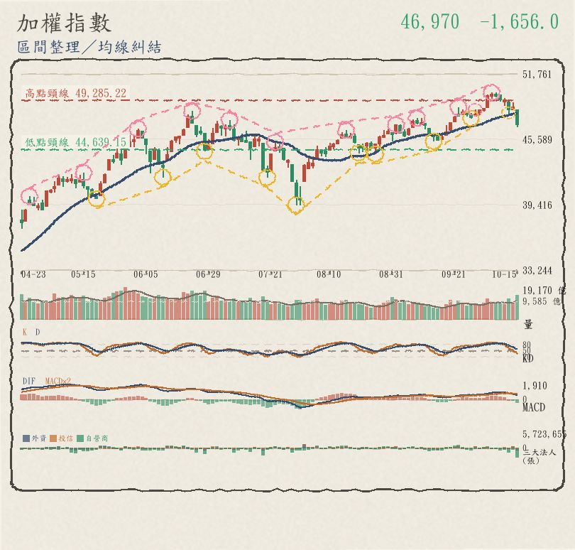
圖說：加權指數日 K（與個股圖相同標記）：黃圈＝轉折低點、粉圈＝轉折高點、虛線小圈＝還沒確認的轉折、藍線＝月線 MA20、水平虛線＝高點／低點頸線。最後一根是資料日當天。
本區塊為公開資料的技術面觀察，不構成投資建議，
不報牌、不預測、不下買賣決策。成交金額為集中市場總成交金額（含 ETF／權證），
與頁首摘要的「上市個股成交金額」口徑不同。標籤是統計，不是評分、也不是推薦。
上市 vs 上櫃（同期快篩）
加權 -3.41% vs 櫃買 -5.53%（同向） → 同向
（兩個市場分開寫，不合併成一個數字；櫃買為 TPEX 公開資料）
櫃買歷史：TPEX 逐日回補 130 根；來源：櫃買中心 www/zh-tw/indexInfo/sectinx（逐日，官方；OpenAPI tpex_index 只回當月）
（TPEX OpenAPI 只回當月，故逐日回補；歷史不足就不算該條均線並標「資料不足」，不用錯數字）
近 20 個交易日大盤狀態回溯（最新在上）（點開看逐日主狀態／量比／量價象限）
用同一支程式回算最近 20 個交易日（主狀態 S1~S8 與量比 20 皆為當日收盤當時的判定，
不是事後調整）；量比 20 未公布的日子寫「—」。
好條件最多的（前 10）
不好條件最多的（前 10）
好條件（8 項）：站上月線、月線向上、底底高、頭頭高、突破頸線、相對大盤強、攻擊量（量增＋上漲）、守住今日高檔（距今日高點 1% 內）。
不好條件（8 項）：跌破前低、今日下跌、相對大盤弱、在月線之下、量增下跌（出貨）、貼近今日低點（1% 內）、跌破昨日低點、月線下彎。
兩邊都是同一組日線資料＋盤中即時價算出來的「符合項目數」，只是把方向相反的條件分開數；
條件數不是評分或推薦，不構成投資建議。
盤中爆量（估量比 ≥ 1.5）（22 上市 16／上櫃 6）
跌破前低（線型轉弱）（23 上市 18／上櫃 5）
今日疲弱（跌幅前 10）（10 上市 4／上櫃 6）
逐檔（70 檔，依盤中成交金額排序）
台積電 2330 上市
2430 -10.0（-0.41%）
區間或轉弱 盤中成交值 554.94 億・全榜第 1 名（上市第 1 名）・相對大盤 -0.93
好條件 2/8：月線向上、守住今日高檔（距今日高點 1% 內）
不好條件 5/8：今日下跌、相對大盤弱、在月線之下、量增下跌（出貨）、貼近今日低點（1% 內）
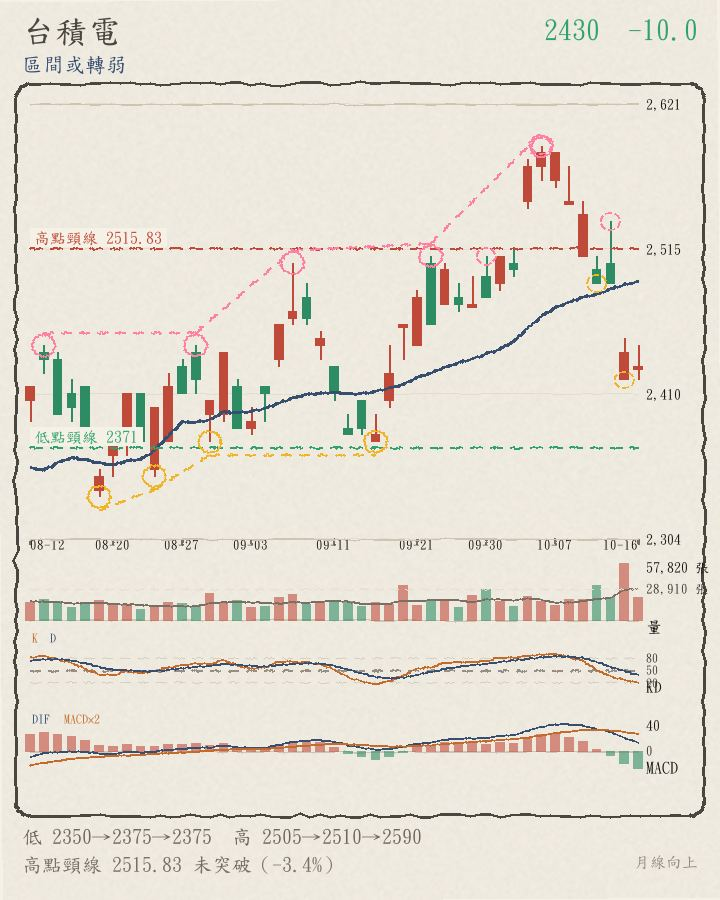
12:30 盤中 2430（-0.41%），比加權指數弱 0.93 個百分點、跌破月線 2489.25，離高點頸線 2515.83 還差 3.4%，轉折還沒走出明顯方向。
- 月線位置：現價 2430 在月線 2489.25 之下（-2.4%）；5 日線 2502 也在月線之上（短均在上）；月線向上
- 量能：以已過交易時間推估，今天成交量約是 20 日均量的 1.42 倍（量增），比 20 日均量大不少；下跌卻量增，量價背離
- 關鍵價位：高點頸線 2515.83 還沒突破，差 3.4%；前一交易日高點 2450（低於 0.8%）；今天盤中高點 2445（低於 0.6%）；今天盤中低點 2420（高於 0.4%）
- 轉折結構：低點 2350、2375、2375 與高點 2505、2510、2590 都沒有明顯遞增，屬於區間震盪或轉弱；還沒確認的轉折低點 10-13 2490、10-15 2420；還沒確認的轉折高點 10-06 2590、10-14 2535（圖上虛線小圈）
南亞 1303 上市
309.5 -5.0（-1.59%）
高點墊高、底部不穩 盤中成交值 291.74 億・全榜第 2 名（上市第 2 名）・相對大盤 -2.11
好條件 4/8：站上月線、月線向上、頭頭高、突破頸線
不好條件 4/8：今日下跌、相對大盤弱、量增下跌（出貨）、跌破昨日低點
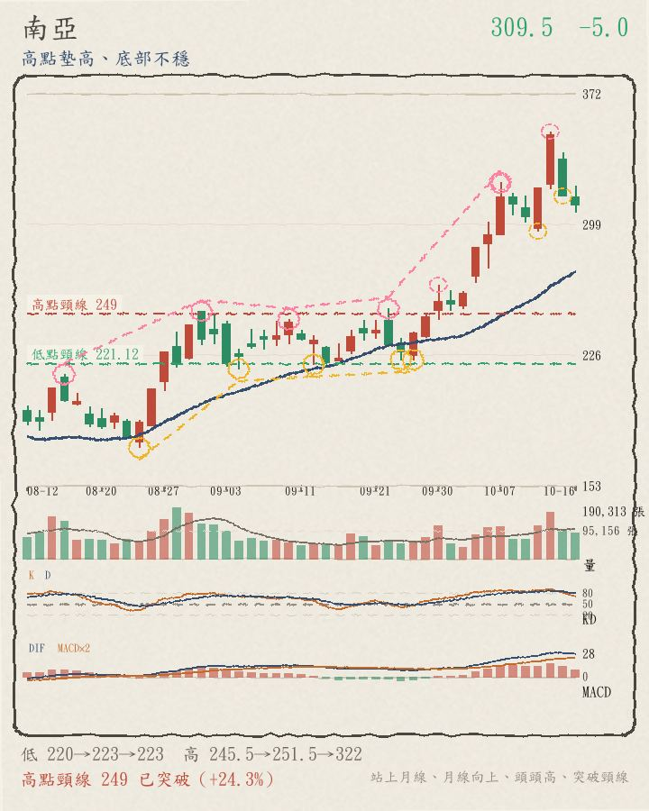
12:30 盤中 309.5（-1.59%），比加權指數弱 2.11 個百分點、站上月線 268.05，已突破高點頸線 249，高點還在墊高（但底部沒同步墊高）。
- 月線位置：現價 309.5 在月線 268.05 之上（+15.5%）；5 日線 319.1 也在月線之上（短均在上）；月線向上
- 量能：以已過交易時間推估，今天成交量約是 20 日均量的 1.49 倍（量增），比 20 日均量大不少；下跌卻量增，量價背離
- 關鍵價位：高點頸線 249 已站上；前一交易日高點 338.5（低於 8.6%）；今天盤中高點 320（低於 3.3%）；今天盤中低點 305.5（高於 1.3%）
- 轉折結構：高點 245.5、251.5、322 墊高（頭頭高），但低點 220.5、223、223 沒有同步墊高；還沒確認的轉折低點 10-13 295、10-15 314.5；還沒確認的轉折高點 10-07 322、10-14 350.5（圖上虛線小圈）
聯發科 2454 上市
4285 +120.0（+2.88%）
底部墊高、未過前高 盤中成交值 254.91 億・全榜第 3 名（上市第 3 名）・相對大盤 +2.36
好條件 3/8：底底高、相對大盤強、攻擊量（量增＋上漲）
不好條件 3/8：跌破前低、在月線之下、月線下彎
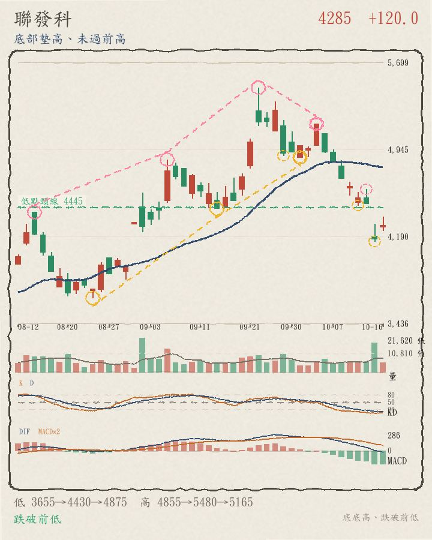
12:30 盤中 4285（+2.88%），比加權指數強 2.36 個百分點、跌破月線 4799.5，底部還在墊高（但高點沒同步創高）。
- 月線位置：現價 4285 在月線 4799.5 之下（-10.7%）；5 日線 4496 也在月線之下（短均在下）；月線向下
- 量能：以已過交易時間推估，今天成交量約是 20 日均量的 1.10 倍（量增），比 20 日均量大一些；上漲又量增，量價配合
- 關鍵價位：前一交易日高點 4295（低於 0.2%）；今天盤中高點 4360（低於 1.7%）；今天盤中低點 4240（高於 1.1%）
- 轉折結構：低點 3655、4430、4875 墊高（底底高），但高點 4855、5480、5165 沒有同步創高；還沒確認的轉折低點 10-13 4460、10-15 4145；還沒確認的轉折高點 10-05 5165、10-14 4600（圖上虛線小圈）
大立光 3008 上市
6285 -320.0（-4.84%）
高點墊高、底部不穩 盤中成交值 219.85 億・全榜第 4 名（上市第 4 名）・相對大盤 -5.36
好條件 2/8：月線向上、頭頭高
不好條件 6/8：跌破前低、今日下跌、相對大盤弱、在月線之下、量增下跌（出貨）、跌破昨日低點
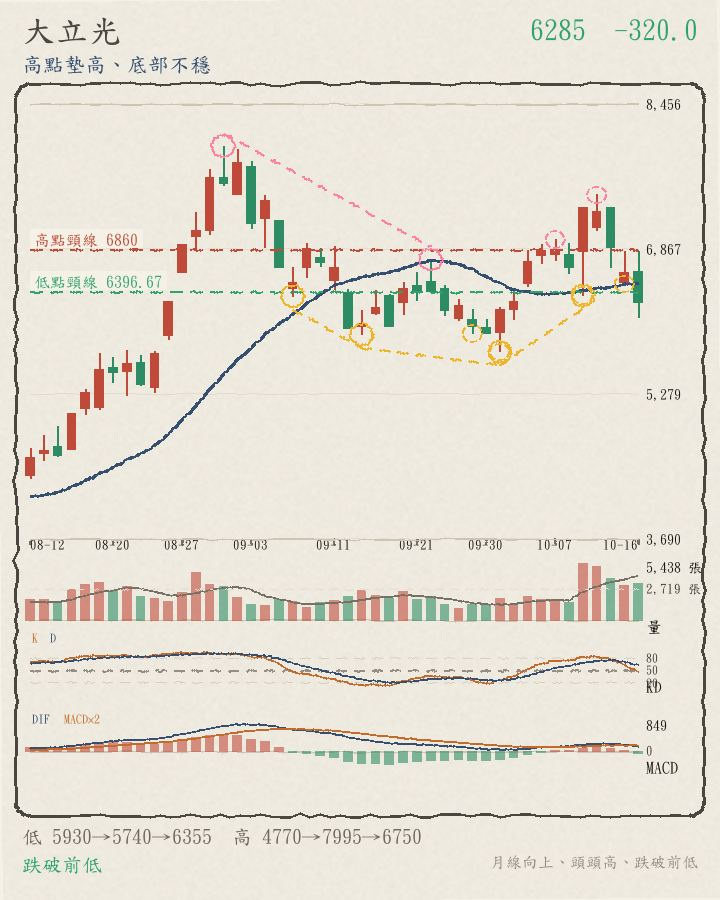
12:30 盤中 6285（-4.84%），比加權指數弱 5.36 個百分點、跌破月線 6480.25，離高點頸線 6860 還差 8.4%，高點還在墊高（但底部沒同步墊高）。
- 月線位置：現價 6285 在月線 6480.25 之下（-3.0%）；5 日線 6949 也在月線之上（短均在上）；月線向上
- 量能：以已過交易時間推估，今天成交量約是 20 日均量的 1.87 倍（爆量），比 20 日均量大不少；下跌卻量增，量價背離
- 關鍵價位：已跌破前一個轉折低點；高點頸線 6860 還在現價上方 8.4%；前一交易日高點 6835（低於 8.0%）；今天盤中高點 6845（低於 8.2%）；今天盤中低點 6115（高於 2.8%）
- 轉折結構：高點 4770、7995、6750 墊高（頭頭高），但低點 5930、5740、6355 沒有同步墊高；還沒確認的轉折低點 10-12 6355、10-15 6485；還沒確認的轉折高點 10-07 6970、10-13 7460（圖上虛線小圈）
富喬 1815 上櫃
139 +11.5（+9.02%）
上升趨勢（底底高＋頭頭高） 盤中成交值 195.92 億・全榜第 5 名（上櫃第 1 名）・相對大盤 +8.50
好條件 8/8：站上月線、月線向上、底底高、頭頭高、突破頸線、相對大盤強、攻擊量（量增＋上漲）、守住今日高檔（距今日高點 1% 內）
不好條件 0/8：無
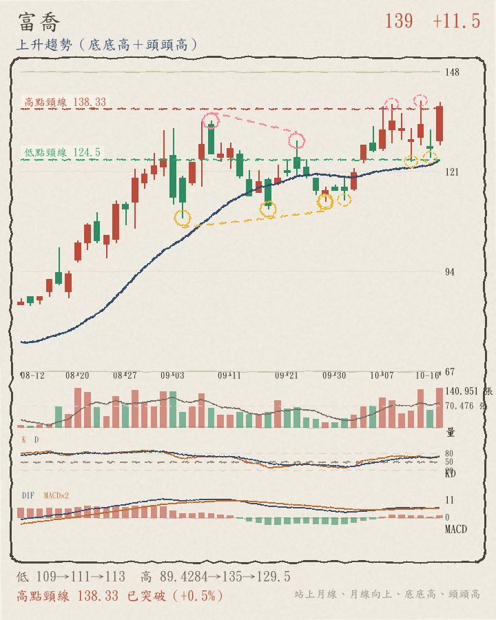
12:30 盤中 139（+9.02%），比加權指數強 8.50 個百分點、站上月線 123，已突破高點頸線 138.33，轉折結構仍是底底高＋頭頭高。
- 月線位置：現價 139 在月線 123 之上（+13.0%）；5 日線 131.9 也在月線之上（短均在上）；月線向上
- 量能：以已過交易時間推估，今天成交量約是 20 日均量的 3.05 倍（爆量），比 20 日均量大不少；上漲又量增，量價配合
- 關鍵價位：高點頸線 138.33 已站上；前一交易日高點 132.5（高於 4.9%）；今天盤中高點 140（低於 0.7%）；今天盤中低點 128.5（高於 8.2%）
- 轉折結構：低點 108.571、111、113 一路墊高、高點 89.4284、135、129.5 也一路墊高，是底底高＋頭頭高；還沒確認的轉折低點 10-13 124、10-15 125；還沒確認的轉折高點 10-08 139.5、10-14 140.5（圖上虛線小圈）
緯穎 6669 上市
1830 -75.0（-3.94%）
區間或轉弱 盤中成交值 193.08 億・全榜第 6 名（上市第 5 名）・相對大盤 -4.46
好條件 0/8：無
不好條件 7/8：跌破前低、今日下跌、相對大盤弱、在月線之下、量增下跌（出貨）、跌破昨日低點、月線下彎
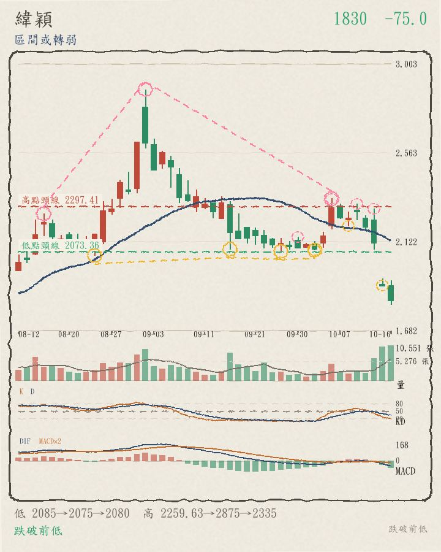
12:30 盤中 1830（-3.94%），比加權指數弱 4.46 個百分點、跌破月線 2151.75，離高點頸線 2297.41 還差 20.3%，轉折還沒走出明顯方向。
- 月線位置：現價 1830 在月線 2151.75 之下（-14.9%）；5 日線 2146 也在月線之下（短均在下）；月線向下
- 量能：以已過交易時間推估，今天成交量約是 20 日均量的 4.25 倍（爆量），比 20 日均量大不少；下跌卻量增，量價背離
- 關鍵價位：已跌破前一個轉折低點；高點頸線 2297.41 還在現價上方 20.3%；前一交易日高點 1940（低於 5.7%）；今天盤中高點 1930（低於 5.2%）；今天盤中低點 1810（高於 1.1%）
- 轉折結構：低點 2085、2075、2080 與高點 2259.63、2875、2335 都沒有明顯遞增，屬於區間震盪或轉弱；還沒確認的轉折低點 10-08 2200、10-15 1905；還沒確認的轉折高點 10-12 2310、10-14 2285（圖上虛線小圈）
南亞科 2408 上市
449.5 +10.0（+2.28%）
區間或轉弱 盤中成交值 171.62 億・全榜第 7 名（上市第 6 名）・相對大盤 +1.76
好條件 1/8：相對大盤強
不好條件 3/8：跌破前低、在月線之下、月線下彎
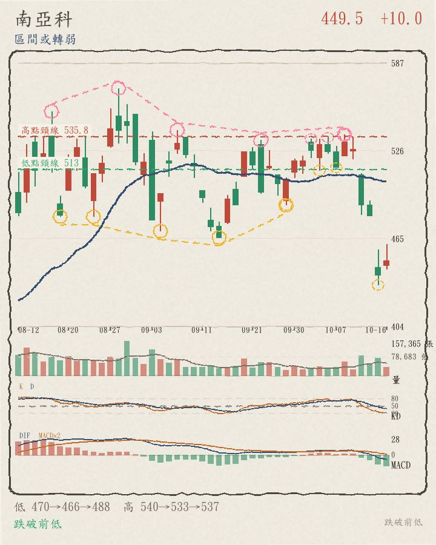
12:30 盤中 449.5（+2.28%），比加權指數強 1.76 個百分點、跌破月線 505.4，離高點頸線 535.8 還差 16.1%，轉折還沒走出明顯方向。
- 月線位置：現價 449.5 在月線 505.4 之下（-11.1%）；5 日線 493.4 也在月線之下（短均在下）；月線向下
- 量能：以已過交易時間推估，今天成交量約是 20 日均量的 1.09 倍（量平），比 20 日均量大一些
- 關鍵價位：已跌破前一個轉折低點；高點頸線 535.8 還在現價上方 16.1%；前一交易日高點 457（低於 1.6%）；今天盤中高點 461（低於 2.5%）；今天盤中低點 443.5（高於 1.4%）
- 轉折結構：低點 470、465.5、488 與高點 540、533、537 都沒有明顯遞增，屬於區間震盪或轉弱；還沒確認的轉折低點 10-07 514、10-15 432.5；還沒確認的轉折高點 10-06 535、10-08 537（圖上虛線小圈）
金像電 2368 上市
1250 +60.0（+5.04%）
區間或轉弱 盤中成交值 166.89 億・全榜第 8 名（上市第 7 名）・相對大盤 +4.52
好條件 4/8：站上月線、月線向上、相對大盤強、攻擊量（量增＋上漲）
不好條件 0/8：無
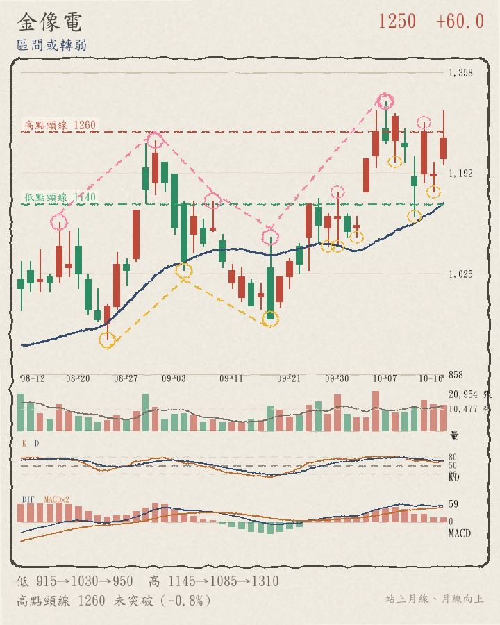
12:30 盤中 1250（+5.04%），比加權指數強 4.52 個百分點、站上月線 1128.2，離高點頸線 1260 還差 0.8%，轉折還沒走出明顯方向。
- 月線位置：現價 1250 在月線 1128.2 之上（+10.8%）；5 日線 1228 也在月線之上（短均在上）；月線向上
- 量能：以已過交易時間推估，今天成交量約是 20 日均量的 1.61 倍（爆量），比 20 日均量大不少；上漲又量增，量價配合
- 關鍵價位：高點頸線 1260 還沒突破，差 0.8%；前一交易日高點 1210（高於 3.3%）；今天盤中高點 1295（低於 3.5%）；今天盤中低點 1205（高於 3.7%）
- 轉折結構：低點 915、1030、950 與高點 1145、1085、1310 都沒有明顯遞增，屬於區間震盪或轉弱；還沒確認的轉折低點 10-13 1120、10-15 1160；還沒確認的轉折高點 10-07 1310、10-14 1275（圖上虛線小圈）
國巨* 2327 上市
575 +2.0（+0.35%）
區間或轉弱 盤中成交值 155.05 億・全榜第 9 名（上市第 8 名）・相對大盤 -0.17
好條件 1/8：月線向上
不好條件 3/8：相對大盤弱、在月線之下、貼近今日低點（1% 內）
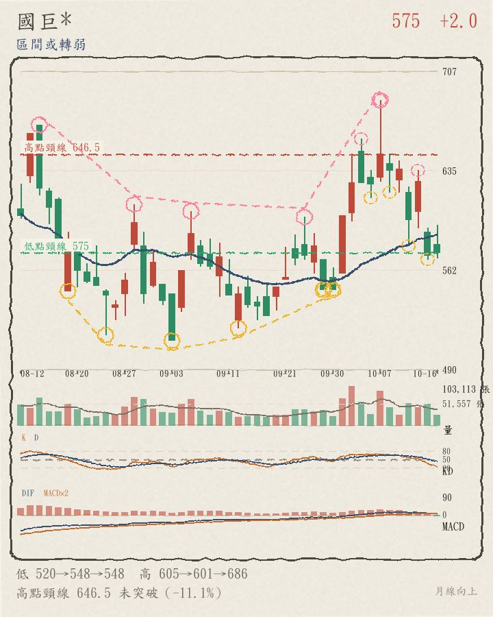
12:30 盤中 575（+0.35%），比加權指數弱 0.17 個百分點、跌破月線 586.25，離高點頸線 646.5 還差 11.1%，轉折還沒走出明顯方向。
- 月線位置：現價 575 在月線 586.25 之下（-1.9%）；5 日線 614 也在月線之上（短均在上）；月線向上
- 量能：以已過交易時間推估，今天成交量約是 20 日均量的 0.82 倍（量平），比 20 日均量少很多；上漲但量縮，量價背離
- 關鍵價位：高點頸線 646.5 還沒突破，差 11.1%；前一交易日高點 593（低於 3.0%）；今天盤中高點 595（低於 3.4%）；今天盤中低點 571（高於 0.7%）
- 轉折結構：低點 520、548、548 與高點 605、601、686 都沒有明顯遞增，屬於區間震盪或轉弱；還沒確認的轉折低點 10-13 580、10-15 570；還沒確認的轉折高點 10-07 686、10-14 635（圖上虛線小圈）
玉晶光 3406 上市
1090 -25.0（-2.24%）
高點墊高、底部不穩 盤中成交值 139.56 億・全榜第 10 名（上市第 9 名）・相對大盤 -2.76
好條件 3/8：站上月線、月線向上、頭頭高
不好條件 3/8：今日下跌、相對大盤弱、量增下跌（出貨）
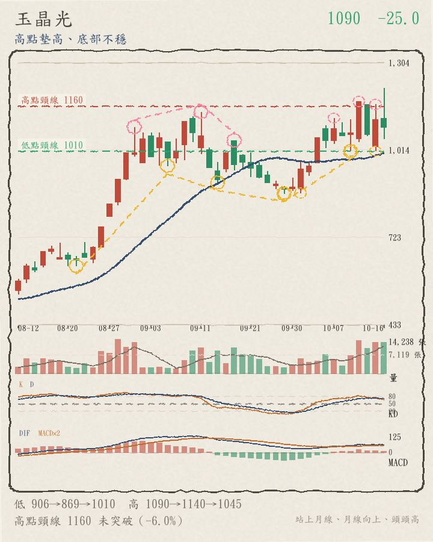
12:30 盤中 1090（-2.24%），比加權指數弱 2.76 個百分點、站上月線 994.55，離高點頸線 1160 還差 6.0%，高點還在墊高（但底部沒同步墊高）。
- 月線位置：現價 1090 在月線 994.55 之上（+9.6%）；5 日線 1097 也在月線之上（短均在上）；月線向上
- 量能：以已過交易時間推估，今天成交量約是 20 日均量的 2.62 倍（爆量），比 20 日均量大不少；下跌卻量增，量價背離
- 關鍵價位：高點頸線 1160 還沒突破，差 6.0%；前一交易日高點 1165（低於 6.4%）；今天盤中高點 1220（低於 10.7%）；今天盤中低點 1050（高於 3.8%）
- 轉折結構：高點 1090、1140、1045 墊高（頭頭高），但低點 906、869、1010 沒有同步墊高；還沒確認的轉折低點 10-12 1010、10-15 1010；還沒確認的轉折高點 10-13 1175、10-15 1165（圖上虛線小圈）
台燿 6274 上櫃
1620 -5.0（-0.31%）
高點墊高、底部不穩 盤中成交值 136.65 億・全榜第 11 名（上櫃第 2 名）・相對大盤 -0.83
好條件 3/8：站上月線、月線向上、頭頭高
不好條件 2/8：今日下跌、相對大盤弱
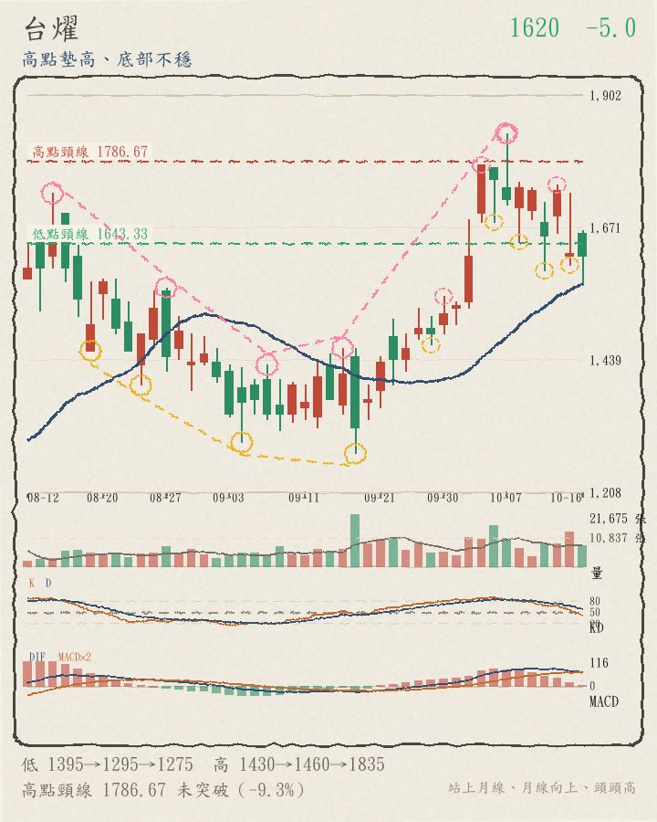
12:30 盤中 1620（-0.31%），比加權指數弱 0.83 個百分點、站上月線 1560.5，離高點頸線 1786.67 還差 9.3%，高點還在墊高（但底部沒同步墊高）。
- 月線位置：現價 1620 在月線 1560.5 之上（+3.8%）；5 日線 1698 也在月線之上（短均在上）；月線向上
- 量能：以已過交易時間推估，今天成交量約是 20 日均量的 1.15 倍（量增），比 20 日均量大不少；下跌卻量增，量價背離
- 關鍵價位：高點頸線 1786.67 還沒突破，差 9.3%；前一交易日高點 1730（低於 6.4%）；今天盤中高點 1665（低於 2.7%）；今天盤中低點 1570（高於 3.2%）
- 轉折結構：高點 1430、1460、1835 墊高（頭頭高），但低點 1395、1295、1275 沒有同步墊高；還沒確認的轉折低點 10-13 1595、10-15 1605；還沒確認的轉折高點 10-07 1835、10-14 1745（圖上虛線小圈）
臻鼎-KY 4958 上市
553 +34.0（+6.55%）
底部墊高、未過前高 盤中成交值 125.02 億・全榜第 12 名（上市第 10 名）・相對大盤 +6.03
好條件 4/8：站上月線、月線向上、底底高、相對大盤強
不好條件 0/8：無
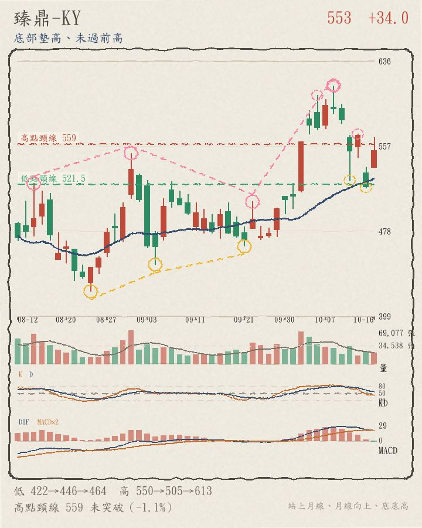
12:30 盤中 553（+6.55%），比加權指數強 6.03 個百分點、站上月線 523，離高點頸線 559 還差 1.1%，底部還在墊高（但高點沒同步創高）。
- 月線位置：現價 553 在月線 523 之上（+5.7%）；5 日線 562.2 也在月線之上（短均在上）；月線向上
- 量能：以已過交易時間推估，今天成交量約是 20 日均量的 0.91 倍（量平），比 20 日均量少一些
- 關鍵價位：高點頸線 559 還沒突破，差 1.1%；前一交易日高點 537（高於 3.0%）；今天盤中高點 565（低於 2.1%）；今天盤中低點 537（高於 3.0%）
- 轉折結構：低點 421.5、446.5、463.5 墊高（底底高），但高點 550、505、613 沒有同步創高；還沒確認的轉折低點 10-13 525、10-15 518；還沒確認的轉折高點 10-08 613、10-14 568（圖上虛線小圈）
景碩 3189 上市
997 +18.0（+1.84%）
區間或轉弱 盤中成交值 121.19 億・全榜第 13 名（上市第 11 名）・相對大盤 +1.32
好條件 3/8：站上月線、月線向上、相對大盤強
不好條件 1/8：貼近今日低點（1% 內）
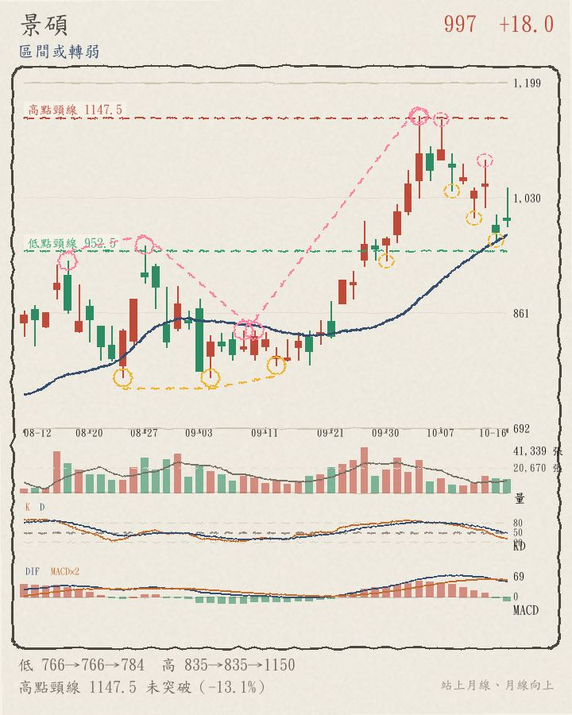
12:30 盤中 997（+1.84%），比加權指數強 1.32 個百分點、站上月線 965.5，離高點頸線 1147.5 還差 13.1%，轉折還沒走出明顯方向。
- 月線位置：現價 997 在月線 965.5 之上（+3.3%）；5 日線 1040.8 也在月線之上（短均在上）；月線向上
- 量能：以已過交易時間推估，今天成交量約是 20 日均量的 0.88 倍（量平），比 20 日均量少一些
- 關鍵價位：高點頸線 1147.5 還沒突破，差 13.1%；前一交易日高點 1005（低於 0.8%）；今天盤中高點 1045（低於 4.6%）；今天盤中低點 988（高於 0.9%）
- 轉折結構：低點 766、766、784 與高點 835、835、1150 都沒有明顯遞增，屬於區間震盪或轉弱；還沒確認的轉折低點 10-13 1000、10-15 968；還沒確認的轉折高點 10-07 1145、10-14 1085（圖上虛線小圈）
欣興 3037 上市
1095 +20.0（+1.86%）
高點墊高、底部不穩 盤中成交值 113.97 億・全榜第 14 名（上市第 12 名）・相對大盤 +1.34
好條件 4/8：月線向上、頭頭高、突破頸線、相對大盤強
不好條件 2/8：在月線之下、貼近今日低點（1% 內）
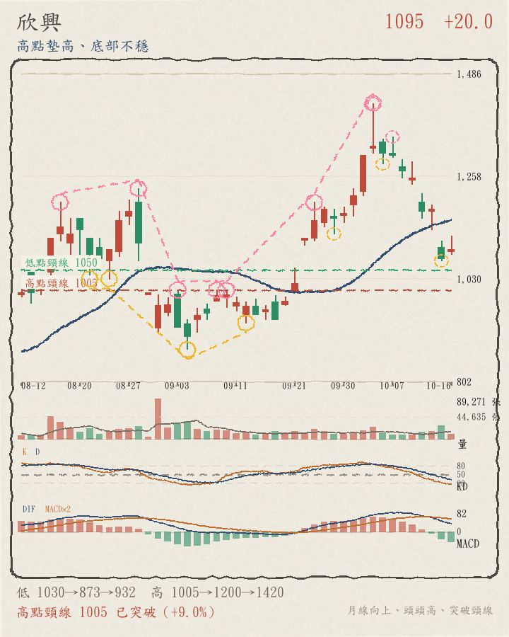
12:30 盤中 1095（+1.86%），比加權指數強 1.34 個百分點、跌破月線 1154.15，已突破高點頸線 1005，高點還在墊高（但底部沒同步墊高）。
- 月線位置：現價 1095 在月線 1154.15 之下（-5.1%）；5 日線 1193 也在月線之上（短均在上）；月線向上
- 量能：以已過交易時間推估，今天成交量約是 20 日均量的 0.97 倍（量平），跟 20 日均量差不多
- 關鍵價位：高點頸線 1005 已站上；前一交易日高點 1115（低於 1.8%）；今天盤中高點 1125（低於 2.7%）；今天盤中低點 1085（高於 0.9%）
- 轉折結構：高點 1005、1200、1420 墊高（頭頭高），但低點 1030、873、932 沒有同步墊高；還沒確認的轉折低點 10-06 1285、10-15 1070；還沒確認的轉折高點 10-05 1420、10-07 1345（圖上虛線小圈）
華通 2313 上市
248 +20.0（+8.77%）
底部墊高、未過前高 盤中成交值 110.3 億・全榜第 15 名（上市第 13 名）・相對大盤 +8.25
好條件 6/8：站上月線、月線向上、底底高、相對大盤強、攻擊量（量增＋上漲）、守住今日高檔（距今日高點 1% 內）
不好條件 0/8：無
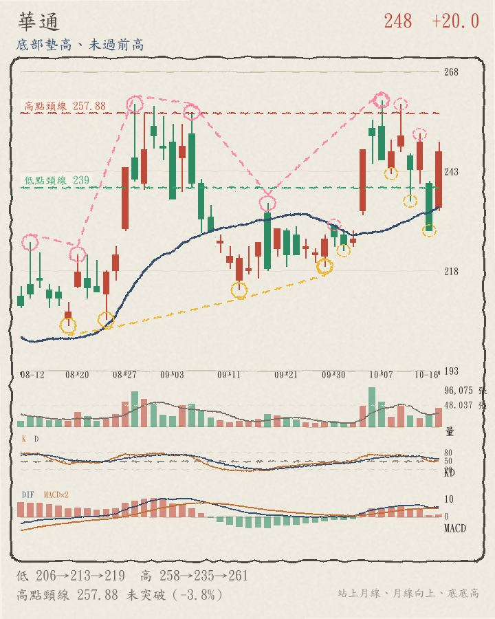
12:30 盤中 248（+8.77%），比加權指數強 8.25 個百分點、站上月線 232.625，離高點頸線 257.88 還差 3.8%，底部還在墊高（但高點沒同步創高）。
- 月線位置：現價 248 在月線 232.625 之上（+6.6%）；5 日線 244.4 也在月線之上（短均在上）；月線向上
- 量能：以已過交易時間推估，今天成交量約是 20 日均量的 2.22 倍（爆量），比 20 日均量大不少；上漲又量增，量價配合
- 關鍵價位：高點頸線 257.88 還沒突破，差 3.8%；前一交易日高點 240.5（高於 3.1%）；今天盤中高點 250.5（低於 1.0%）；今天盤中低點 233（高於 6.4%）
- 轉折結構：低點 205.5、213、219 墊高（底底高），但高點 258、235、261 沒有同步創高；還沒確認的轉折低點 10-13 235.5、10-15 228；還沒確認的轉折高點 10-12 260、10-14 252.5（圖上虛線小圈）
創意 3443 上市
7560 -110.0（-1.43%）
上升趨勢（底底高＋頭頭高） 盤中成交值 108.41 億・全榜第 16 名（上市第 14 名）・相對大盤 -1.95
好條件 3/8：月線向上、底底高、頭頭高
不好條件 6/8：跌破前低、今日下跌、相對大盤弱、在月線之下、量增下跌（出貨）、跌破昨日低點
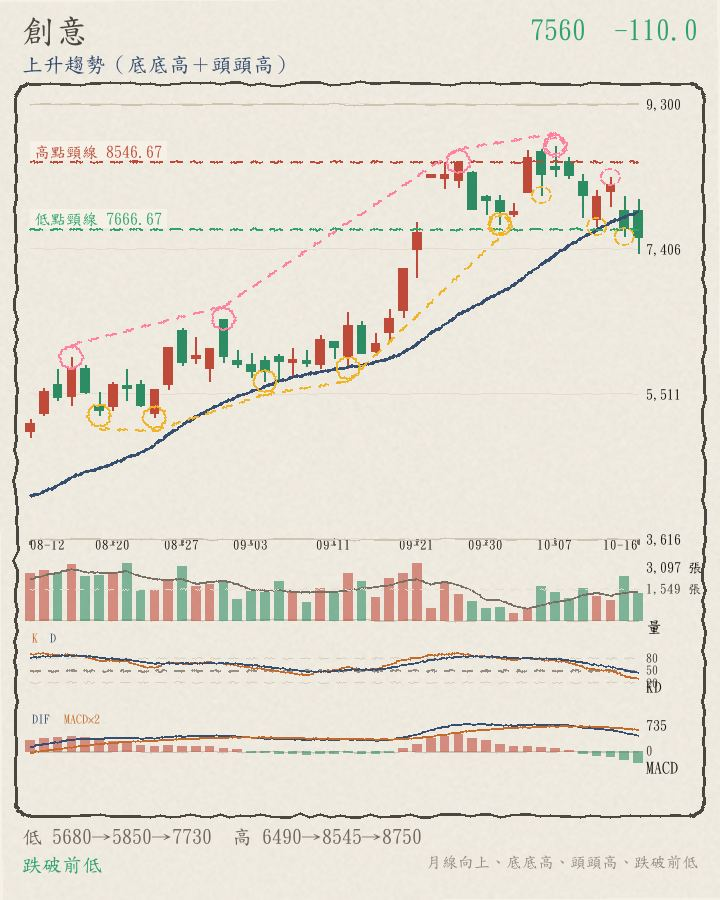
12:30 盤中 7560（-1.43%），比加權指數弱 1.95 個百分點、跌破月線 7821.25，離高點頸線 8546.67 還差 11.5%，轉折結構仍是底底高＋頭頭高。
- 月線位置：現價 7560 在月線 7821.25 之下（-3.3%）；5 日線 8094 也在月線之上（短均在上）；月線向上
- 量能：以已過交易時間推估，今天成交量約是 20 日均量的 1.24 倍（量增），比 20 日均量大不少；下跌卻量增，量價背離
- 關鍵價位：已跌破前一個轉折低點；高點頸線 8546.67 還在現價上方 11.5%；前一交易日高點 8095（低於 6.6%）；今天盤中高點 8050（低於 6.1%）；今天盤中低點 7345（高於 2.9%）
- 轉折結構：低點 5680、5850、7730 一路墊高、高點 6490、8545、8750 也一路墊高，是底底高＋頭頭高；還沒確認的轉折低點 10-13 7700、10-15 7570；還沒確認的轉折高點 10-07 8750、10-14 8345（圖上虛線小圈）
環球晶 6488 上櫃
908 -15.0（-1.63%）
區間或轉弱 盤中成交值 107.53 億・全榜第 17 名（上櫃第 3 名）・相對大盤 -2.15
好條件 1/8：月線向上
不好條件 4/8：今日下跌、相對大盤弱、在月線之下、跌破昨日低點
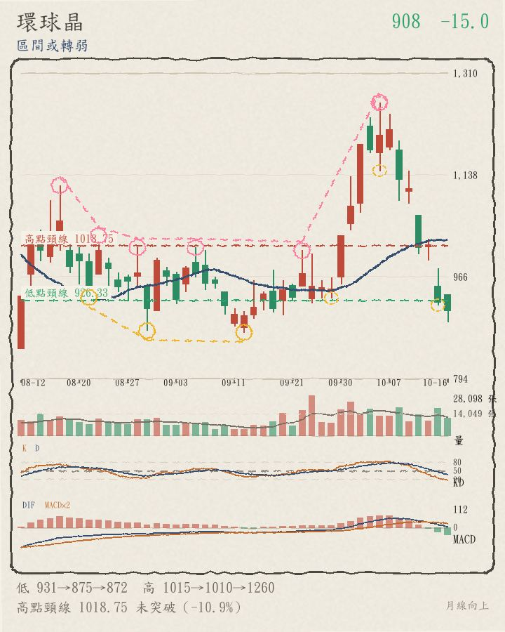
12:30 盤中 908（-1.63%），比加權指數弱 2.15 個百分點、跌破月線 1028.25，離高點頸線 1018.75 還差 10.9%，轉折還沒走出明顯方向。
- 月線位置：現價 908 在月線 1028.25 之下（-11.7%）；5 日線 1040.6 也在月線之上（短均在上）；月線向上
- 量能：以已過交易時間推估，今天成交量約是 20 日均量的 1.13 倍（量增），比 20 日均量大一些；下跌卻量增，量價背離
- 關鍵價位：高點頸線 1018.75 還沒突破，差 10.9%；前一交易日高點 980（低於 7.3%）；今天盤中高點 936（低於 3.0%）；今天盤中低點 890（高於 2.0%）
- 轉折結構：低點 931、875、872 與高點 1015、1010、1260 都沒有明顯遞增，屬於區間震盪或轉弱；還沒確認的轉折低點 10-06 1145、10-15 918；還沒確認的轉折高點 10-06 1260（圖上虛線小圈）
台表科 6278 上市
299 -4.0（-1.32%）
上升趨勢（底底高＋頭頭高） 盤中成交值 100.4 億・全榜第 18 名（上市第 15 名）・相對大盤 -1.84
好條件 5/8：站上月線、月線向上、底底高、頭頭高、突破頸線
不好條件 3/8：今日下跌、相對大盤弱、量增下跌（出貨）
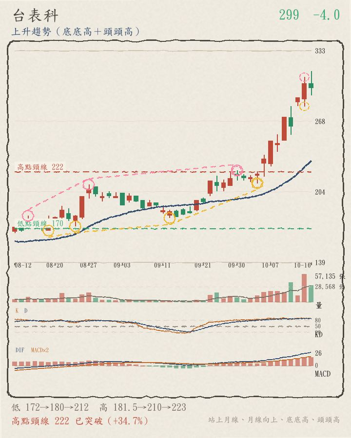
12:30 盤中 299（-1.32%），比加權指數弱 1.84 個百分點、站上月線 226.1，已突破高點頸線 222，轉折結構仍是底底高＋頭頭高。
- 月線位置：現價 299 在月線 226.1 之上（+32.2%）；5 日線 275.5 也在月線之上（短均在上）；月線向上
- 量能：以已過交易時間推估，今天成交量約是 20 日均量的 3.77 倍（爆量），比 20 日均量大不少；下跌卻量增，量價背離
- 關鍵價位：高點頸線 222 已站上；前一交易日高點 309（低於 3.2%）；今天盤中高點 314.5（低於 4.9%）；今天盤中低點 292.5（高於 2.2%）
- 轉折結構：低點 172、179.5、211.5 一路墊高、高點 181.5、210、223 也一路墊高，是底底高＋頭頭高；還沒確認的轉折低點 10-05 211.5、10-15 282；還沒確認的轉折高點 09-30 223、10-15 309（圖上虛線小圈）
奇鋐 3017 上市
3325 +240.0（+7.78%）
區間或轉弱 盤中成交值 100.18 億・全榜第 19 名（上市第 16 名）・相對大盤 +7.26
好條件 3/8：相對大盤強、攻擊量（量增＋上漲）、守住今日高檔（距今日高點 1% 內）
不好條件 2/8：在月線之下、月線下彎
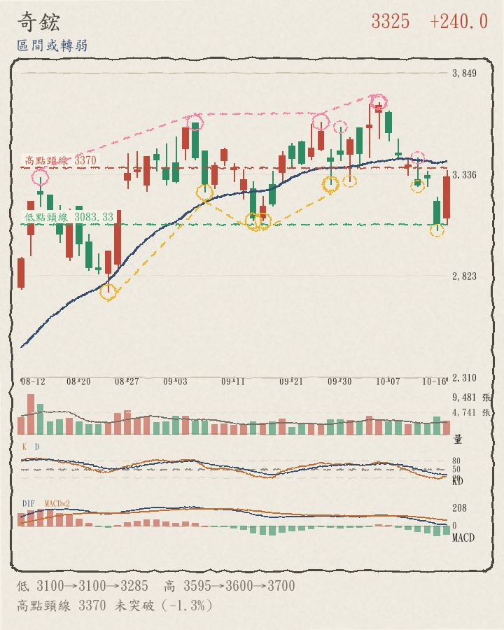
12:30 盤中 3325（+7.78%），比加權指數強 7.26 個百分點、跌破月線 3392，離高點頸線 3370 還差 1.3%，轉折還沒走出明顯方向。
- 月線位置：現價 3325 在月線 3392 之下（-2.0%）；5 日線 3301 也在月線之下（短均在下）；月線向下
- 量能：以已過交易時間推估，今天成交量約是 20 日均量的 1.38 倍（量增），比 20 日均量大不少；上漲又量增，量價配合
- 關鍵價位：高點頸線 3370 還沒突破，差 1.3%；前一交易日高點 3220（高於 3.3%）；今天盤中高點 3355（低於 0.9%）；今天盤中低點 3080（高於 8.0%）
- 轉折結構：低點 3100、3100、3285 與高點 3595、3600、3700 都沒有明顯遞增，屬於區間震盪或轉弱；還沒確認的轉折低點 10-13 3275、10-15 3050；還沒確認的轉折高點 10-06 3700、10-13 3420（圖上虛線小圈）
量增
↑ 回上方清單
南電 8046 上市
1365 +20.0（+1.49%）
底部墊高、未過前高 盤中成交值 99.9 億・全榜第 20 名（上市第 17 名）・相對大盤 +0.97
好條件 4/8：站上月線、月線向上、底底高、相對大盤強
不好條件 0/8：無
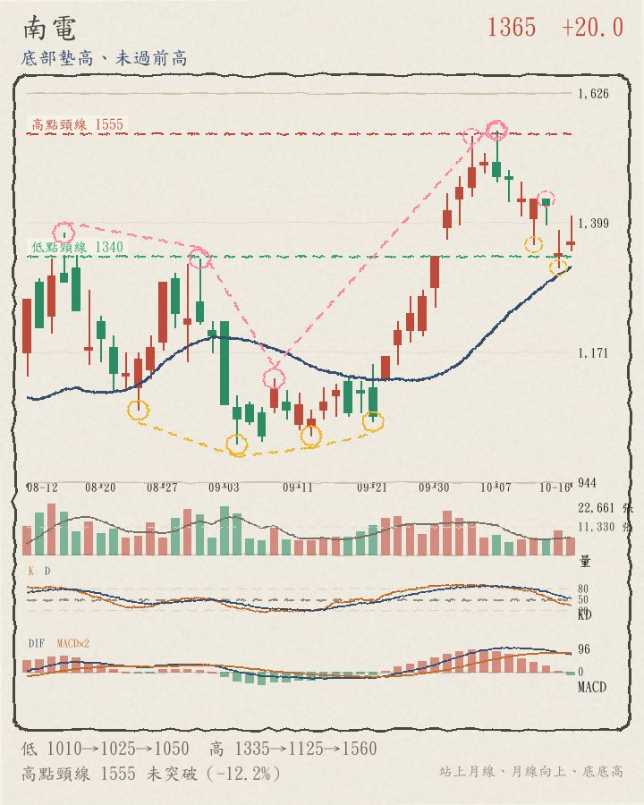
12:30 盤中 1365（+1.49%），比加權指數強 0.97 個百分點、站上月線 1306.5，離高點頸線 1555 還差 12.2%，底部還在墊高（但高點沒同步創高）。
- 月線位置：現價 1365 在月線 1306.5 之上（+4.5%）；5 日線 1426 也在月線之上（短均在上）；月線向上
- 量能：以已過交易時間推估，今天成交量約是 20 日均量的 0.88 倍（量平），比 20 日均量少一些
- 關鍵價位：高點頸線 1555 還沒突破，差 12.2%；前一交易日高點 1385（低於 1.4%）；今天盤中高點 1410（低於 3.2%）；今天盤中低點 1350（高於 1.1%）
- 轉折結構：低點 1010、1025、1050 墊高（底底高），但高點 1335、1125、1560 沒有同步創高；還沒確認的轉折低點 10-13 1360、10-15 1320；還沒確認的轉折高點 10-07 1560、10-14 1440（圖上虛線小圈）
台光電 2383 上市
5105 -15.0（-0.29%）
區間或轉弱 盤中成交值 98.73 億・全榜第 21 名（上市第 18 名）・相對大盤 -0.81
好條件 1/8：月線向上
不好條件 3/8：今日下跌、相對大盤弱、在月線之下
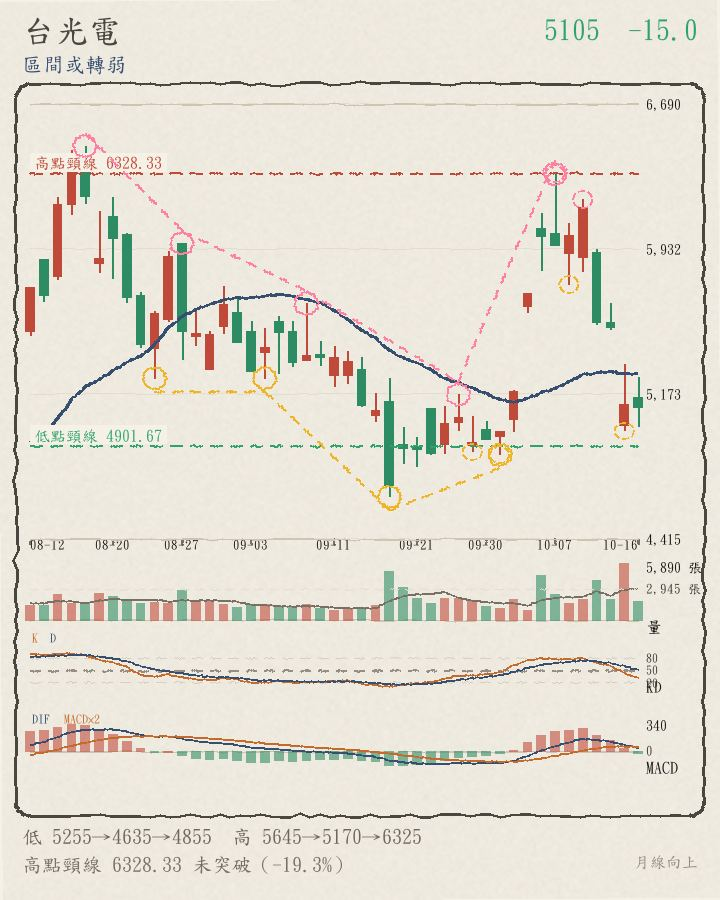
12:30 盤中 5105（-0.29%），比加權指數弱 0.81 個百分點、跌破月線 5280.25，離高點頸線 6328.33 還差 19.3%，轉折還沒走出明顯方向。
- 月線位置：現價 5105 在月線 5280.25 之下（-3.3%）；5 日線 5667 也在月線之上（短均在上）；月線向上
- 量能：以已過交易時間推估，今天成交量約是 20 日均量的 1.08 倍（量平），比 20 日均量大一些
- 關鍵價位：高點頸線 6328.33 還沒突破，差 19.3%；前一交易日高點 5330（低於 4.2%）；今天盤中高點 5260（低於 2.9%）；今天盤中低點 5005（高於 2.0%）
- 轉折結構：低點 5255、4635、4855 與高點 5645、5170、6325 都沒有明顯遞增，屬於區間震盪或轉弱；還沒確認的轉折低點 10-08 5745、10-15 4980；還沒確認的轉折高點 10-07 6325、10-12 6190（圖上虛線小圈）
友達 2409 上市
35.7 +0.8（+2.29%）
高點墊高、底部不穩 盤中成交值 96.88 億・全榜第 22 名（上市第 19 名）・相對大盤 +1.77
好條件 4/8：站上月線、月線向上、頭頭高、相對大盤強
不好條件 0/8：無
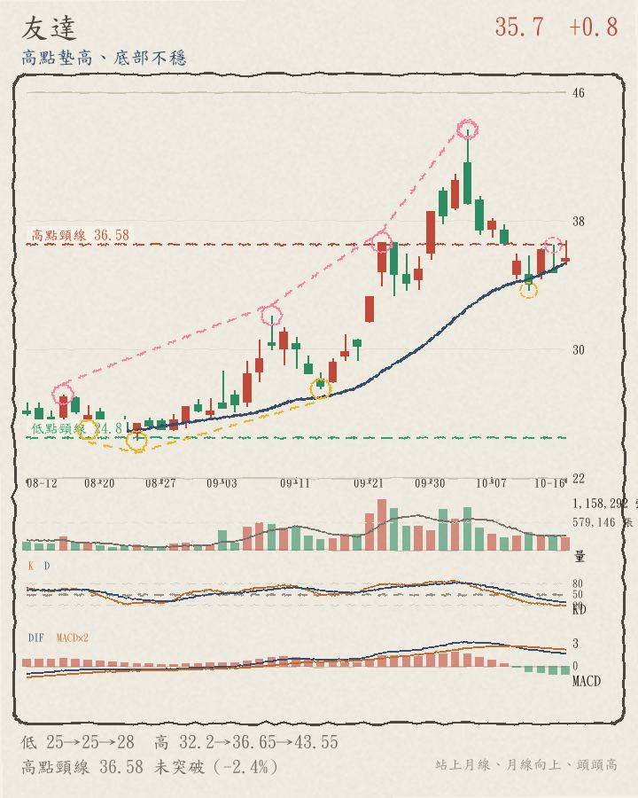
12:30 盤中 35.7（+2.29%），比加權指數強 1.77 個百分點、站上月線 35.04，離高點頸線 36.58 還差 2.4%，高點還在墊高（但底部沒同步墊高）。
- 月線位置：現價 35.7 在月線 35.04 之上（+1.9%）；5 日線 35.49 也在月線之上（短均在上）；月線向上
- 量能：以已過交易時間推估，今天成交量約是 20 日均量的 0.65 倍（量縮），比 20 日均量少很多；上漲但量縮，量價背離
- 關鍵價位：高點頸線 36.58 還沒突破，差 2.4%；前一交易日高點 36.5（低於 2.2%）；今天盤中高點 36.75（低於 2.9%）；今天盤中低點 35.3（高於 1.1%）
- 轉折結構：高點 32.2、36.65、43.55 墊高（頭頭高），但低點 25.25、24.6、27.75 沒有同步墊高；還沒確認的轉折低點 10-13 33.75；還沒確認的轉折高點 10-05 43.55、10-15 36.5（圖上虛線小圈）
鴻海 2317 上市
246 +6.5（+2.71%）
底部墊高、未過前高 盤中成交值 91.95 億・全榜第 23 名（上市第 20 名）・相對大盤 +2.19
好條件 4/8：底底高、相對大盤強、攻擊量（量增＋上漲）、守住今日高檔（距今日高點 1% 內）
不好條件 3/8：跌破前低、在月線之下、月線下彎
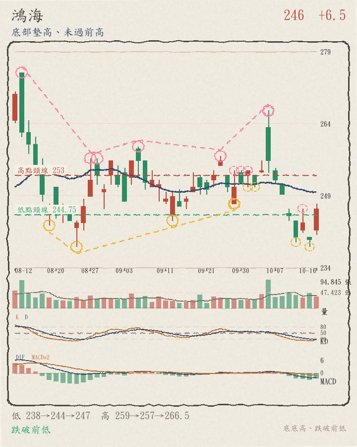
12:30 盤中 246（+2.71%），比加權指數強 2.19 個百分點、跌破月線 249.5，離高點頸線 253 還差 2.8%，底部還在墊高（但高點沒同步創高）。
- 月線位置：現價 246 在月線 249.5 之下（-1.4%）；5 日線 243.2 也在月線之下（短均在下）；月線向下
- 量能：以已過交易時間推估，今天成交量約是 20 日均量的 1.37 倍（量增），比 20 日均量大不少；上漲又量增，量價配合
- 關鍵價位：已跌破前一個轉折低點；高點頸線 253 還在現價上方 2.8%；前一交易日高點 240（高於 2.5%）；今天盤中高點 247（低於 0.4%）；今天盤中低點 240.5（高於 2.3%）
- 轉折結構：低點 238、243.5、247 墊高（底底高），但高點 259、257、266.5 沒有同步創高；還沒確認的轉折低點 10-13 239、10-15 238；還沒確認的轉折高點 10-06 266.5、10-14 246（圖上虛線小圈）
台虹 8039 上市
311.5 +28.0（+9.88%）
區間或轉弱 盤中成交值 88.12 億・全榜第 24 名（上市第 21 名）・相對大盤 +9.36
好條件 4/8：站上月線、月線向上、相對大盤強、攻擊量（量增＋上漲）
不好條件 0/8：無
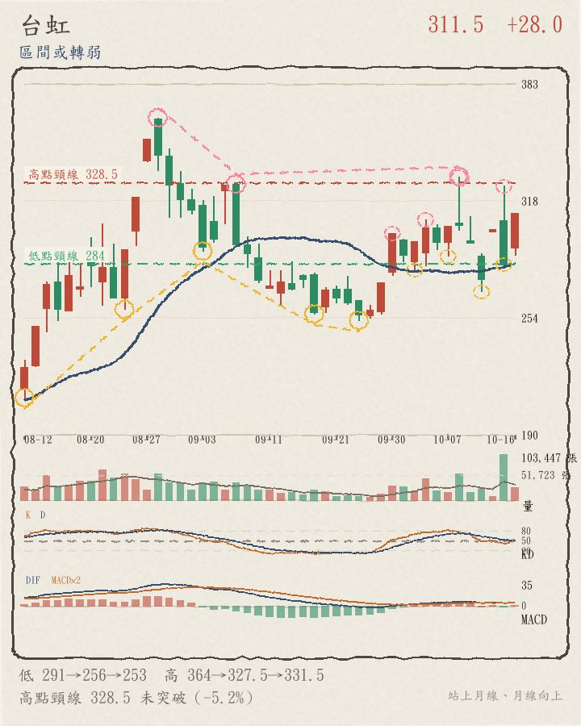
12:30 盤中 311.5（+9.88%），比加權指數強 9.36 個百分點、站上月線 281.975，離高點頸線 328.5 還差 5.2%，轉折還沒走出明顯方向。
- 月線位置：現價 311.5 在月線 281.975 之上（+10.5%）；5 日線 292.7 也在月線之上（短均在上）；月線向上
- 量能：以已過交易時間推估，今天成交量約是 20 日均量的 1.77 倍（爆量），比 20 日均量大不少；上漲又量增，量價配合
- 關鍵價位：高點頸線 328.5 還沒突破，差 5.2%；前一交易日高點 326.5（低於 4.6%）；今天盤中高點 311.5（高於 0.0%）；今天盤中低點 288.5（高於 8.0%）
- 轉折結構：低點 291、256.5、253 與高點 364、327.5、331.5 都沒有明顯遞增，屬於區間震盪或轉弱；還沒確認的轉折低點 10-13 268.5、10-15 283.5；還沒確認的轉折高點 10-08 331.5、10-15 326.5（圖上虛線小圈）
聯亞 3081 上櫃
2580 -60.0（-2.27%）
高點墊高、底部不穩 盤中成交值 87.64 億・全榜第 25 名（上櫃第 4 名）・相對大盤 -2.79
好條件 2/8：月線向上、頭頭高
不好條件 6/8：跌破前低、今日下跌、相對大盤弱、在月線之下、量增下跌（出貨）、跌破昨日低點

12:30 盤中 2580（-2.27%），比加權指數弱 2.79 個百分點、跌破月線 2819，離高點頸線 2931.67 還差 12.0%，高點還在墊高（但底部沒同步墊高）。
- 月線位置：現價 2580 在月線 2819 之下（-8.5%）；5 日線 2846 也在月線之上（短均在上）；月線向上
- 量能：以已過交易時間推估，今天成交量約是 20 日均量的 1.38 倍（量增），比 20 日均量大不少；下跌卻量增，量價背離
- 關鍵價位：已跌破前一個轉折低點；高點頸線 2931.67 還在現價上方 12.0%；前一交易日高點 2780（低於 7.2%）；今天盤中高點 2695（低於 4.3%）；今天盤中低點 2500（高於 3.2%）
- 轉折結構：高點 2930、2950、3210 墊高（頭頭高），但低點 1450、2650、2585 沒有同步墊高；還沒確認的轉折低點 10-01 2605、10-15 2615；還沒確認的轉折高點 10-07 3210、10-14 2915（圖上虛線小圈）
大量 3167 上市
1055 +95.0（+9.90%）
上升趨勢（底底高＋頭頭高） 盤中成交值 87.44 億・全榜第 26 名（上市第 22 名）・相對大盤 +9.38
好條件 6/8：站上月線、月線向上、底底高、頭頭高、相對大盤強、攻擊量（量增＋上漲）
不好條件 0/8：無
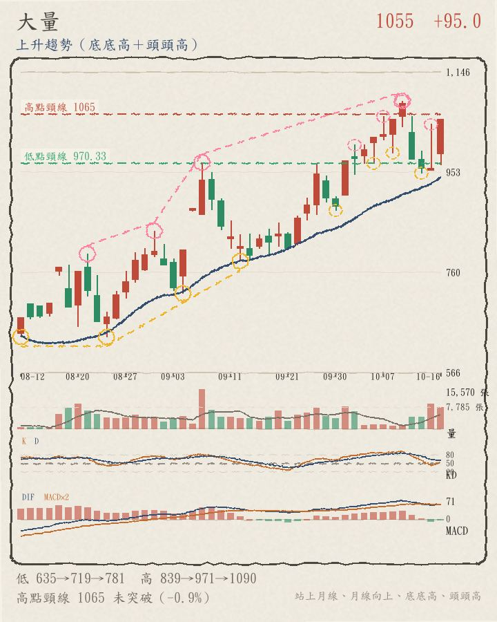
12:30 盤中 1055（+9.90%），比加權指數強 9.38 個百分點、站上月線 930，離高點頸線 1065 還差 0.9%，轉折結構仍是底底高＋頭頭高。
- 月線位置：現價 1055 在月線 930 之上（+13.4%）；5 日線 1007.4 也在月線之上（短均在上）；月線向上
- 量能：以已過交易時間推估，今天成交量約是 20 日均量的 2.54 倍（爆量），比 20 日均量大不少；上漲又量增，量價配合
- 關鍵價位：高點頸線 1065 還沒突破，差 0.9%；前一交易日高點 1045（高於 1.0%）；今天盤中高點 1055（高於 0.0%）；今天盤中低點 967（高於 9.1%）
- 轉折結構：低點 635、719、781 一路墊高、高點 839、971、1090 也一路墊高，是底底高＋頭頭高；還沒確認的轉折低點 10-08 990、10-14 951；還沒確認的轉折高點 10-12 1090、10-15 1045（圖上虛線小圈）
日月光投控 3711 上市
671 -2.0（-0.30%）
上升趨勢（底底高＋頭頭高） 盤中成交值 86.66 億・全榜第 27 名（上市第 23 名）・相對大盤 -0.82
好條件 3/8：月線向上、底底高、頭頭高
不好條件 6/8：跌破前低、今日下跌、相對大盤弱、在月線之下、量增下跌（出貨）、跌破昨日低點
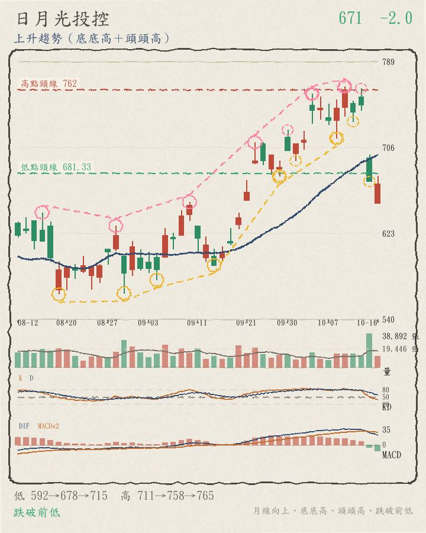
12:30 盤中 671（-0.30%），比加權指數弱 0.82 個百分點、跌破月線 694.7，離高點頸線 762 還差 11.9%，轉折結構仍是底底高＋頭頭高。
- 月線位置：現價 671 在月線 694.7 之下（-3.4%）；5 日線 733.2 也在月線之上（短均在上）；月線向上
- 量能：以已過交易時間推估，今天成交量約是 20 日均量的 1.23 倍（量增），比 20 日均量大不少；下跌卻量增，量價背離
- 關鍵價位：已跌破前一個轉折低點；高點頸線 762 還在現價上方 11.9%；前一交易日高點 699（低於 4.0%）；今天盤中高點 678（低於 1.0%）；今天盤中低點 652（高於 2.9%）
- 轉折結構：低點 592、678、715 一路墊高、高點 711、758、765 也一路墊高，是底底高＋頭頭高；還沒確認的轉折低點 10-13 731、10-15 673；還沒確認的轉折高點 10-12 765、10-14 763（圖上虛線小圈）
台達電 2308 上市
1635 +5.0（+0.31%）
高點墊高、底部不穩 盤中成交值 85.62 億・全榜第 28 名（上市第 24 名）・相對大盤 -0.21
好條件 2/8：月線向上、頭頭高
不好條件 4/8：跌破前低、相對大盤弱、在月線之下、貼近今日低點（1% 內）
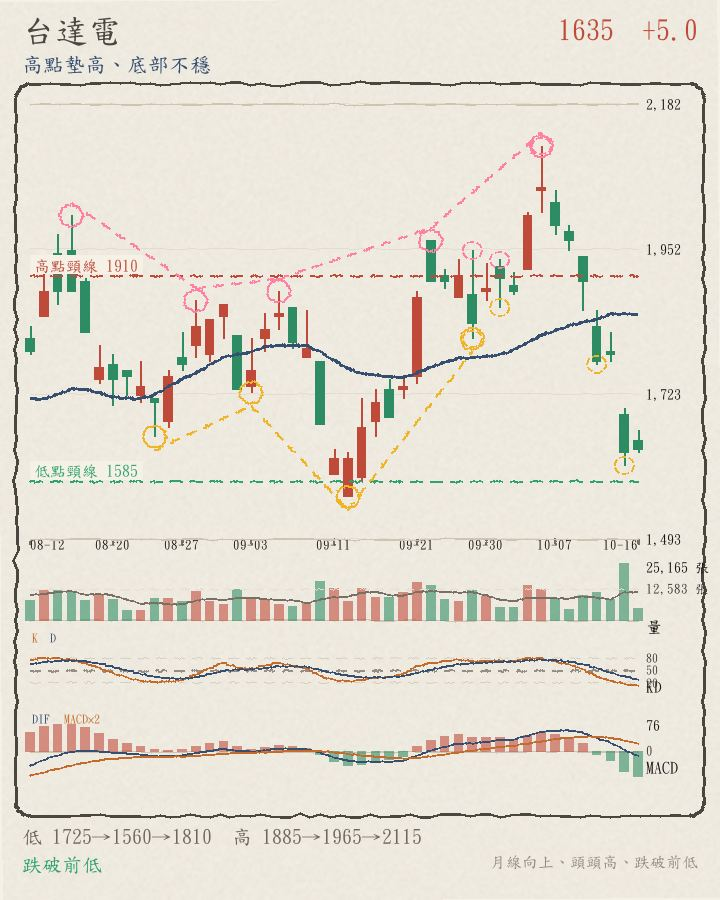
12:30 盤中 1635（+0.31%），比加權指數弱 0.21 個百分點、跌破月線 1850，離高點頸線 1910 還差 14.4%，高點還在墊高（但底部沒同步墊高）。
- 月線位置：現價 1635 在月線 1850 之下（-11.6%）；5 日線 1811 也在月線之下（短均在下）；月線向上
- 量能：以已過交易時間推估，今天成交量約是 20 日均量的 0.63 倍（量縮），比 20 日均量少很多；上漲但量縮，量價背離
- 關鍵價位：已跌破前一個轉折低點；高點頸線 1910 還在現價上方 14.4%；前一交易日高點 1700（低於 3.8%）；今天盤中高點 1665（低於 1.8%）；今天盤中低點 1630（高於 0.3%）
- 轉折結構：高點 1885、1965、2115 墊高（頭頭高），但低點 1725、1560、1810 沒有同步墊高；還沒確認的轉折低點 10-13 1770、10-15 1610；還沒確認的轉折高點 10-01 1935、10-06 2115（圖上虛線小圈）
聯電 2303 上市
133 -0.5（-0.37%）
底部墊高、未過前高 盤中成交值 82.42 億・全榜第 29 名（上市第 25 名）・相對大盤 -0.89
好條件 2/8：月線向上、底底高
不好條件 5/8：跌破前低、今日下跌、相對大盤弱、在月線之下、貼近今日低點（1% 內）
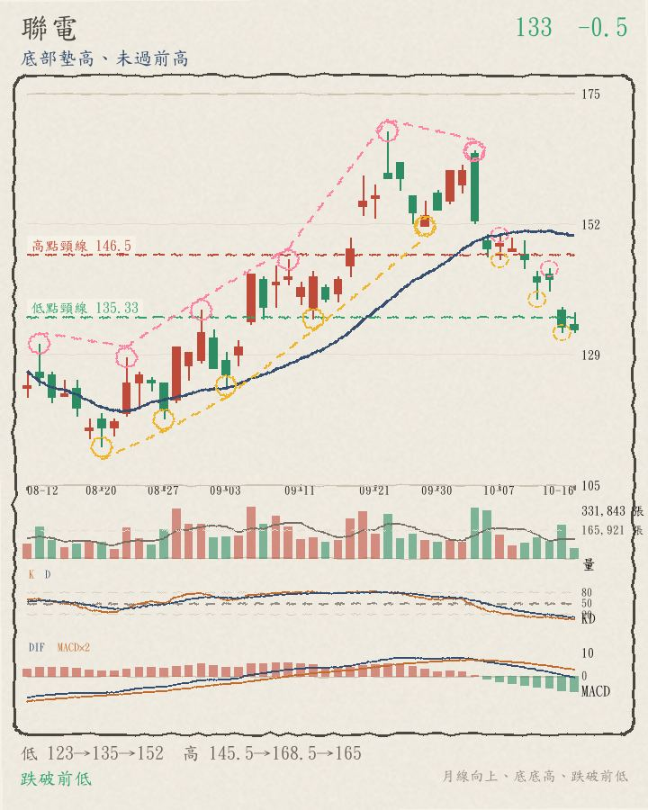
12:30 盤中 133（-0.37%），比加權指數弱 0.89 個百分點、跌破月線 150.225，離高點頸線 146.5 還差 9.2%，底部還在墊高（但高點沒同步創高）。
- 月線位置：現價 133 在月線 150.225 之下（-11.5%）；5 日線 142 也在月線之下（短均在下）；月線向上
- 量能：以已過交易時間推估，今天成交量約是 20 日均量的 0.49 倍（量縮），比 20 日均量少很多
- 關鍵價位：已跌破前一個轉折低點；高點頸線 146.5 還在現價上方 9.2%；前一交易日高點 137（低於 2.9%）；今天盤中高點 136（低於 2.2%）；今天盤中低點 132.5（高於 0.4%）
- 轉折結構：低點 123、135、151.5 墊高（底底高），但高點 145.5、168.5、165 沒有同步創高；還沒確認的轉折低點 10-13 138.5、10-15 132.5；還沒確認的轉折高點 10-07 150、10-14 144（圖上虛線小圈）
高力 8996 上市
1595 +75.0（+4.93%）
上升趨勢（底底高＋頭頭高） 盤中成交值 80.79 億・全榜第 30 名（上市第 26 名）・相對大盤 +4.41
好條件 6/8：站上月線、月線向上、底底高、頭頭高、相對大盤強、攻擊量（量增＋上漲）
不好條件 0/8：無
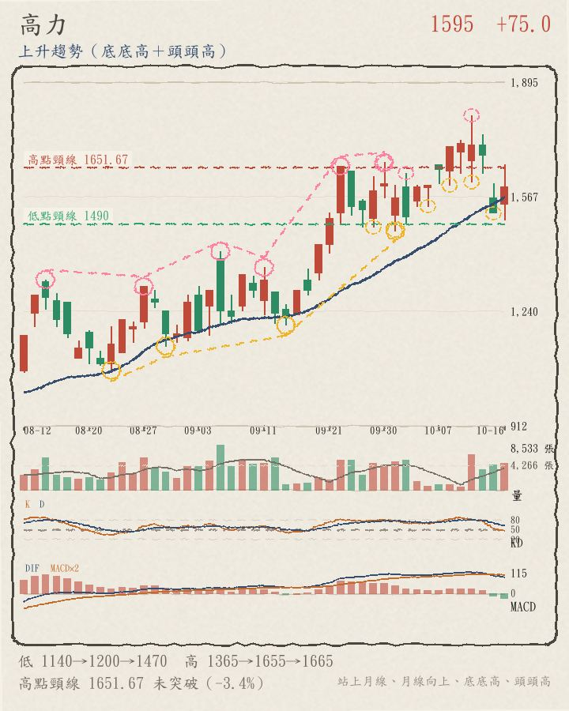
12:30 盤中 1595（+4.93%），比加權指數強 4.41 個百分點、站上月線 1546.75，離高點頸線 1651.67 還差 3.4%，轉折結構仍是底底高＋頭頭高。
- 月線位置：現價 1595 在月線 1546.75 之上（+3.1%）；5 日線 1670 也在月線之上（短均在上）；月線向上
- 量能：以已過交易時間推估，今天成交量約是 20 日均量的 2.04 倍（爆量），比 20 日均量大不少；上漲又量增，量價配合
- 關鍵價位：高點頸線 1651.67 還沒突破，差 3.4%；前一交易日高點 1605（低於 0.6%）；今天盤中高點 1660（低於 3.9%）；今天盤中低點 1500（高於 6.3%）
- 轉折結構：低點 1140、1200、1470 一路墊高、高點 1365、1655、1665 也一路墊高，是底底高＋頭頭高；還沒確認的轉折低點 10-13 1610、10-15 1520；還沒確認的轉折高點 10-02 1635、10-13 1800（圖上虛線小圈）
禾伸堂 3026 上市
810 -1.0（-0.12%）
上升趨勢（底底高＋頭頭高） 盤中成交值 80.48 億・全榜第 31 名（上市第 27 名）・相對大盤 -0.64
好條件 4/8：站上月線、月線向上、底底高、頭頭高
不好條件 3/8：今日下跌、相對大盤弱、量增下跌（出貨）
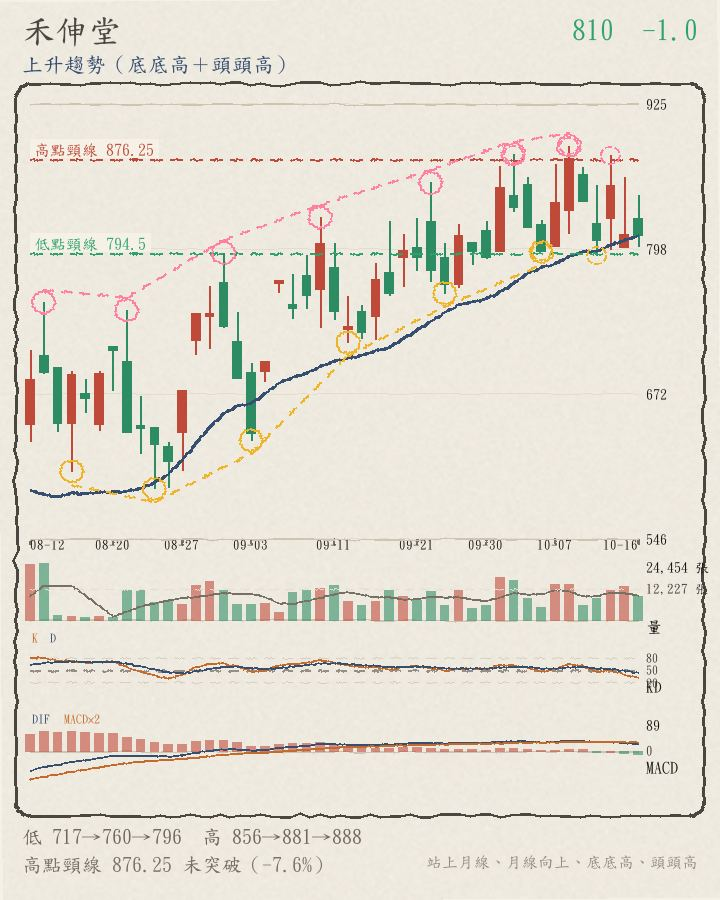
12:30 盤中 810（-0.12%），比加權指數弱 0.64 個百分點、站上月線 805.9，離高點頸線 876.25 還差 7.6%，轉折結構仍是底底高＋頭頭高。
- 月線位置：現價 810 在月線 805.9 之上（+0.5%）；5 日線 837.6 也在月線之上（短均在上）；月線向上
- 量能：以已過交易時間推估，今天成交量約是 20 日均量的 1.24 倍（量增），比 20 日均量大不少；下跌卻量增，量價背離
- 關鍵價位：高點頸線 876.25 還沒突破，差 7.6%；前一交易日高點 861（低於 5.9%）；今天盤中高點 845（低於 4.1%）；今天盤中低點 801（高於 1.1%）
- 轉折結構：低點 717、760、796 一路墊高、高點 856、881、888 也一路墊高，是底底高＋頭頭高；還沒確認的轉折低點 10-06 796、10-13 793；還沒確認的轉折高點 10-08 888、10-14 880（圖上虛線小圈）
台玻 1802 上市
66.5 +3.8（+6.06%）
高點墊高、底部不穩 盤中成交值 78.96 億・全榜第 32 名（上市第 28 名）・相對大盤 +5.54
好條件 5/8：站上月線、月線向上、頭頭高、相對大盤強、攻擊量（量增＋上漲）
不好條件 0/8：無
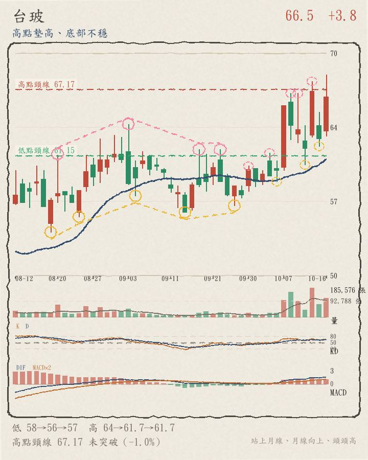
12:30 盤中 66.5（+6.06%），比加權指數強 5.54 個百分點、站上月線 60.31，離高點頸線 67.17 還差 1.0%，高點還在墊高（但底部沒同步墊高）。
- 月線位置：現價 66.5 在月線 60.31 之上（+10.3%）；5 日線 63.78 也在月線之上（短均在上）；月線向上
- 量能：以已過交易時間推估，今天成交量約是 20 日均量的 3.54 倍（爆量），比 20 日均量大不少；上漲又量增，量價配合
- 關鍵價位：高點頸線 67.17 還沒突破，差 1.0%；前一交易日高點 65.1（高於 2.2%）；今天盤中高點 68.5（低於 2.9%）；今天盤中低點 62.9（高於 5.7%）
- 轉折結構：高點 64、61.7、61.7 墊高（頭頭高），但低點 57.5、56、56.6 沒有同步墊高；還沒確認的轉折低點 10-13 60.3、10-15 62；還沒確認的轉折高點 10-12 66.8、10-14 67.9（圖上虛線小圈）
台塑 1301 上市
81.5 -0.2（-0.24%）
高點墊高、底部不穩 盤中成交值 66.56 億・全榜第 33 名（上市第 29 名）・相對大盤 -0.76
好條件 4/8：站上月線、月線向上、頭頭高、突破頸線
不好條件 3/8：今日下跌、相對大盤弱、量增下跌（出貨）
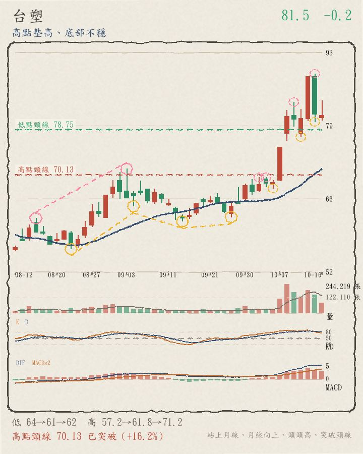
12:30 盤中 81.5（-0.24%），比加權指數弱 0.76 個百分點、站上月線 70.24，已突破高點頸線 70.13，高點還在墊高（但底部沒同步墊高）。
- 月線位置：現價 81.5 在月線 70.24 之上（+16.0%）；5 日線 82.7 也在月線之上（短均在上）；月線向上
- 量能：以已過交易時間推估，今天成交量約是 20 日均量的 1.72 倍（爆量），比 20 日均量大不少；下跌卻量增，量價背離
- 關鍵價位：高點頸線 70.13 已站上；前一交易日高點 89.4（低於 8.8%）；今天盤中高點 84.3（低於 3.3%）；今天盤中低點 80.5（高於 1.2%）
- 轉折結構：高點 57.2、61.8、71.2 墊高（頭頭高），但低點 64.1、61.2、62 沒有同步墊高；還沒確認的轉折低點 10-13 77.3、10-15 80.2；還沒確認的轉折高點 10-12 84、10-15 89.4（圖上虛線小圈）
旺矽 6223 上櫃
5295 -5.0（-0.09%）
高點墊高、底部不穩 盤中成交值 63.75 億・全榜第 34 名（上櫃第 5 名）・相對大盤 -0.61
好條件 2/8：月線向上、頭頭高
不好條件 5/8：今日下跌、相對大盤弱、在月線之下、量增下跌（出貨）、跌破昨日低點
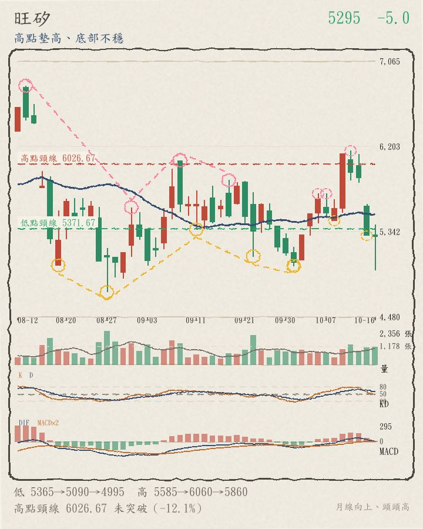
12:30 盤中 5295（-0.09%），比加權指數弱 0.61 個百分點、跌破月線 5520.75，離高點頸線 6026.67 還差 12.1%，高點還在墊高（但底部沒同步墊高）。
- 月線位置：現價 5295 在月線 5520.75 之下（-4.1%）；5 日線 5766 也在月線之上（短均在上）；月線向上
- 量能：以已過交易時間推估，今天成交量約是 20 日均量的 1.76 倍（爆量），比 20 日均量大不少；下跌卻量增，量價背離
- 關鍵價位：高點頸線 6026.67 還沒突破，差 12.1%；前一交易日高點 5615（低於 5.7%）；今天盤中高點 5410（低於 2.1%）；今天盤中低點 4950（高於 7.0%）
- 轉折結構：高點 5585、6060、5860 墊高（頭頭高），但低點 5365、5090、4995 沒有同步墊高；還沒確認的轉折低點 10-08 5450、10-15 5300；還沒確認的轉折高點 10-07 5725、10-13 6160（圖上虛線小圈）
金居 8358 上櫃
470 +8.5（+1.84%）
底部墊高、未過前高 盤中成交值 61.38 億・全榜第 35 名（上櫃第 6 名）・相對大盤 +1.32
好條件 3/8：底底高、相對大盤強、攻擊量（量增＋上漲）
不好條件 3/8：跌破前低、在月線之下、月線下彎
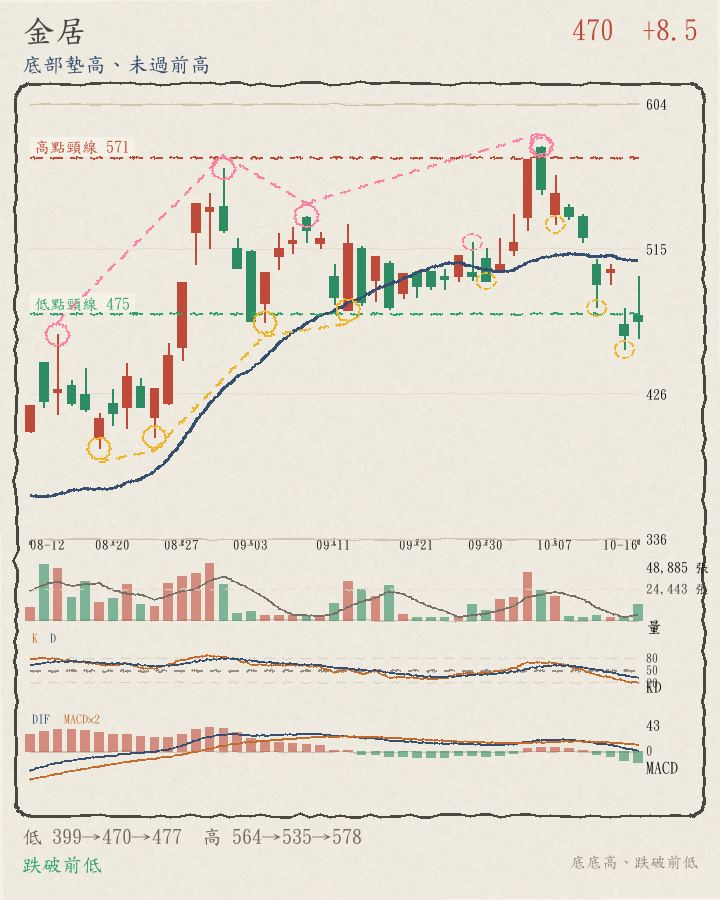
12:30 盤中 470（+1.84%），比加權指數強 1.32 個百分點、跌破月線 508.075，離高點頸線 571 還差 17.7%，底部還在墊高（但高點沒同步創高）。
- 月線位置：現價 470 在月線 508.075 之下（-7.5%）；5 日線 502.7 也在月線之下（短均在下）；月線向下
- 量能：以已過交易時間推估，今天成交量約是 20 日均量的 1.20 倍（量增），比 20 日均量大不少；上漲又量增，量價配合
- 關鍵價位：已跌破前一個轉折低點；高點頸線 571 還在現價上方 17.7%；前一交易日高點 478（低於 1.7%）；今天盤中高點 497.5（低於 5.5%）；今天盤中低點 459.5（高於 2.3%）
- 轉折結構：低點 399、469.5、477 墊高（底底高），但高點 564、535、578 沒有同步創高；還沒確認的轉折低點 10-13 478.5、10-15 453；還沒確認的轉折高點 09-29 519、10-06 578（圖上虛線小圈）
華邦電 2344 上市
161.5 +6.5（+4.19%）
底部墊高、未過前高 盤中成交值 60.94 億・全榜第 36 名（上市第 30 名）・相對大盤 +3.67
好條件 2/8：底底高、相對大盤強
不好條件 3/8：跌破前低、在月線之下、月線下彎
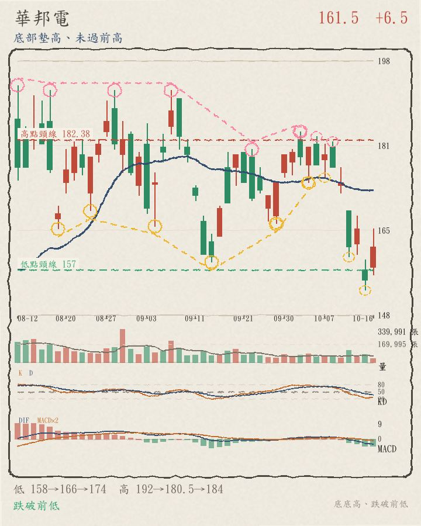
12:30 盤中 161.5（+4.19%），比加權指數強 3.67 個百分點、跌破月線 172.5，離高點頸線 182.38 還差 11.4%，底部還在墊高（但高點沒同步創高）。
- 月線位置：現價 161.5 在月線 172.5 之下（-6.4%）；5 日線 166.5 也在月線之下（短均在下）；月線向下
- 量能：以已過交易時間推估，今天成交量約是 20 日均量的 0.61 倍（量縮），比 20 日均量少很多；上漲但量縮，量價背離
- 關鍵價位：已跌破前一個轉折低點；高點頸線 182.38 還在現價上方 11.4%；前一交易日高點 159（高於 1.6%）；今天盤中高點 165（低於 2.1%）；今天盤中低點 156（高於 3.5%）
- 轉折結構：低點 158.5、166、174 墊高（底底高），但高點 192、180.5、184 沒有同步創高；還沒確認的轉折低點 10-13 159.5、10-15 153；還沒確認的轉折高點 10-06 183、10-08 182（圖上虛線小圈）
台塑化 6505 上市
122.5 +11.0（+9.87%）
上升趨勢（底底高＋頭頭高） 盤中成交值 58.9 億・全榜第 37 名（上市第 31 名）・相對大盤 +9.35
好條件 7/8：站上月線、月線向上、底底高、頭頭高、突破頸線、相對大盤強、攻擊量（量增＋上漲）
不好條件 0/8：無
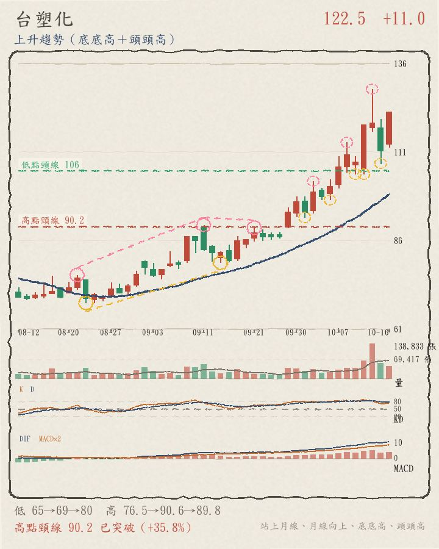
12:30 盤中 122.5（+9.87%），比加權指數強 9.35 個百分點、站上月線 97.41，已突破高點頸線 90.2，轉折結構仍是底底高＋頭頭高。
- 月線位置：現價 122.5 在月線 97.41 之上（+25.8%）；5 日線 113.8 也在月線之上（短均在上）；月線向上
- 量能：以已過交易時間推估，今天成交量約是 20 日均量的 1.79 倍（爆量），比 20 日均量大不少；上漲又量增，量價配合
- 關鍵價位：高點頸線 90.2 已站上；前一交易日高點 120.5（高於 1.7%）；今天盤中高點 122.5（高於 0.0%）；今天盤中低點 112.5（高於 8.9%）
- 轉折結構：低點 65.4、68.6、80 一路墊高、高點 76.5、90.6、89.8 也一路墊高，是底底高＋頭頭高；還沒確認的轉折低點 10-13 105、10-15 108；還沒確認的轉折高點 10-08 114、10-14 129（圖上虛線小圈）
健策 3653 上市
6780 +15.0（+0.22%）
高點墊高、底部不穩 盤中成交值 57.36 億・全榜第 38 名（上市第 32 名）・相對大盤 -0.30
好條件 3/8：站上月線、月線向上、頭頭高
不好條件 1/8：相對大盤弱
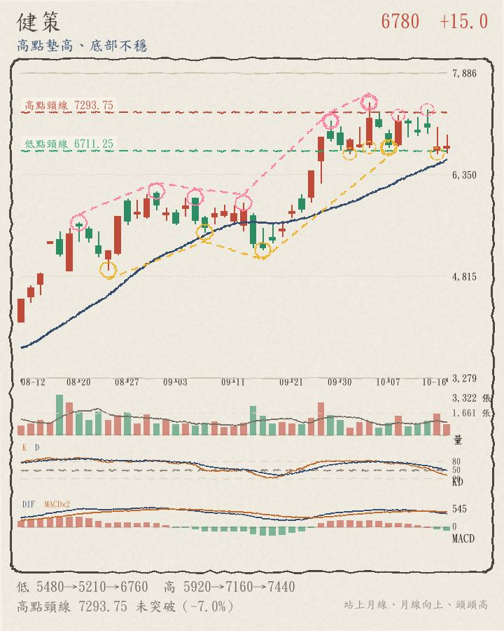
12:30 盤中 6780（+0.22%），比加權指數弱 0.30 個百分點、站上月線 6499.5，離高點頸線 7293.75 還差 7.0%，高點還在墊高（但底部沒同步墊高）。
- 月線位置：現價 6780 在月線 6499.5 之上（+4.3%）；5 日線 7030 也在月線之上（短均在上）；月線向上
- 量能：以已過交易時間推估，今天成交量約是 20 日均量的 0.91 倍（量平），比 20 日均量少一些
- 關鍵價位：高點頸線 7293.75 還沒突破，差 7.0%；前一交易日高點 7070（低於 4.1%）；今天盤中高點 6950（低於 2.4%）；今天盤中低點 6675（高於 1.6%）
- 轉折結構：高點 5920、7160、7440 墊高（頭頭高），但低點 5480、5210、6760 沒有同步墊高；還沒確認的轉折低點 10-07 6760、10-15 6660；還沒確認的轉折高點 10-08 7245、10-14 7330（圖上虛線小圈）
矽力*-KY 6415 上市
489.5 +23.0（+4.93%）
高點墊高、底部不穩 盤中成交值 54.03 億・全榜第 39 名（上市第 33 名）・相對大盤 +4.41
好條件 5/8：站上月線、月線向上、頭頭高、相對大盤強、攻擊量（量增＋上漲）
不好條件 0/8：無
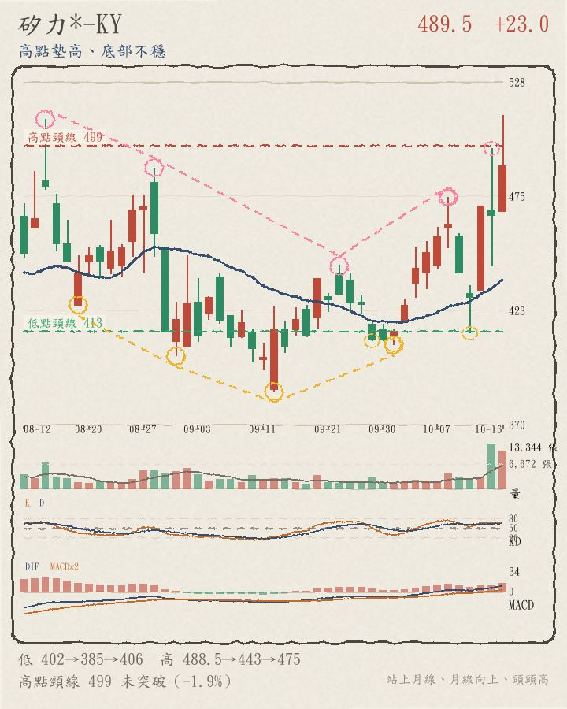
12:30 盤中 489.5（+4.93%），比加權指數強 4.41 個百分點、站上月線 432.725，離高點頸線 499 還差 1.9%，高點還在墊高（但底部沒同步墊高）。
- 月線位置：現價 489.5 在月線 432.725 之上（+13.1%）；5 日線 453.7 也在月線之上（短均在上）；月線向上
- 量能：以已過交易時間推估，今天成交量約是 20 日均量的 5.93 倍（爆量），比 20 日均量大不少；上漲又量增，量價配合
- 關鍵價位：高點頸線 499 還沒突破，差 1.9%；前一交易日高點 497.5（低於 1.6%）；今天盤中高點 513（低於 4.6%）；今天盤中低點 468.5（高於 4.5%）
- 轉折結構：高點 488.5、443、475 墊高（頭頭高），但低點 401.5、385、406.5 沒有同步墊高；還沒確認的轉折低點 10-01 406.5、10-13 412；還沒確認的轉折高點 10-08 475、10-15 497.5（圖上虛線小圈）
致茂 2360 上市
2020 -5.0（-0.25%）
高點墊高、底部不穩 盤中成交值 52.82 億・全榜第 40 名（上市第 34 名）・相對大盤 -0.77
好條件 2/8：月線向上、頭頭高
不好條件 6/8：跌破前低、今日下跌、相對大盤弱、在月線之下、量增下跌（出貨）、跌破昨日低點
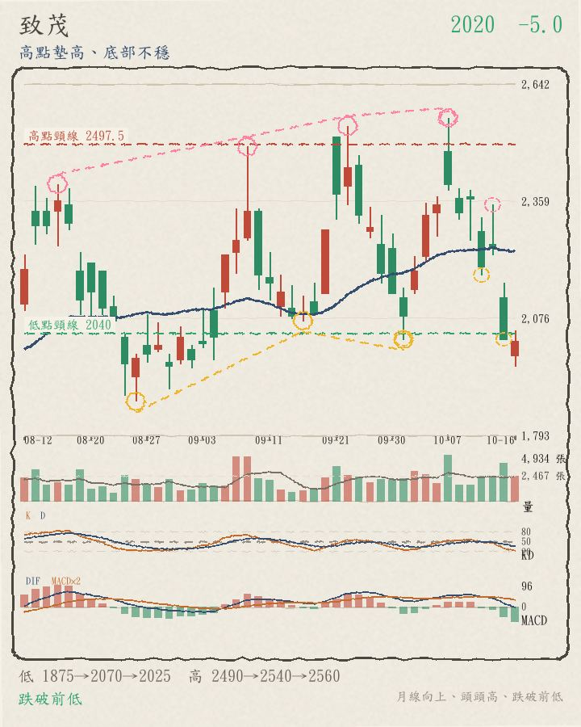
12:30 盤中 2020（-0.25%），比加權指數弱 0.77 個百分點、跌破月線 2240.75，離高點頸線 2497.5 還差 19.1%，高點還在墊高（但底部沒同步墊高）。
- 月線位置：現價 2020 在月線 2240.75 之下（-9.8%）；5 日線 2234 也在月線之下（短均在下）；月線向上
- 量能：以已過交易時間推估，今天成交量約是 20 日均量的 1.46 倍（量增），比 20 日均量大不少；下跌卻量增，量價背離
- 關鍵價位：已跌破前一個轉折低點；高點頸線 2497.5 還在現價上方 19.1%；前一交易日高點 2160（低於 6.5%）；今天盤中高點 2045（低於 1.2%）；今天盤中低點 1960（高於 3.1%）
- 轉折結構：高點 2490、2540、2560 墊高（頭頭高），但低點 1875、2070、2025 沒有同步墊高；還沒確認的轉折低點 10-13 2180、10-15 2025；還沒確認的轉折高點 10-07 2560、10-14 2350（圖上虛線小圈）
今國光 6209 上市
101 +8.0（+8.60%）
高點墊高、底部不穩 盤中成交值 50.56 億・全榜第 41 名（上市第 35 名）・相對大盤 +8.08
好條件 7/8：站上月線、月線向上、頭頭高、突破頸線、相對大盤強、攻擊量（量增＋上漲）、守住今日高檔（距今日高點 1% 內）
不好條件 0/8：無
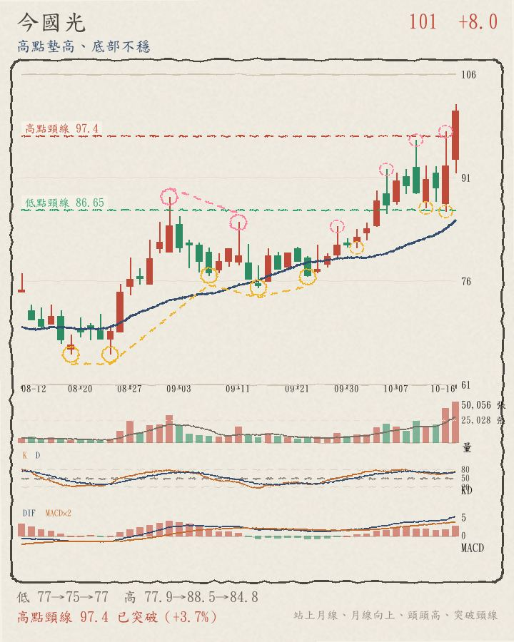
12:30 盤中 101（+8.60%），比加權指數強 8.08 個百分點、站上月線 83.855，已突破高點頸線 97.4，高點還在墊高（但底部沒同步墊高）。
- 月線位置：現價 101 在月線 83.855 之上（+20.4%）；5 日線 90.62 也在月線之上（短均在上）；月線向上
- 量能：以已過交易時間推估，今天成交量約是 20 日均量的 5.44 倍（爆量），比 20 日均量大不少；上漲又量增，量價配合
- 關鍵價位：高點頸線 97.4 已站上；前一交易日高點 98（高於 3.1%）；今天盤中高點 102（低於 1.0%）；今天盤中低點 92（高於 9.8%）
- 轉折結構：高點 77.9、88.5、84.8 墊高（頭頭高），但低點 77.1、75.3、76.9 沒有同步墊高；還沒確認的轉折低點 10-13 86.9、10-15 86.4；還沒確認的轉折高點 10-12 96.8、10-15 98（圖上虛線小圈）
群聯 8299 上櫃
1890 +60.0（+3.28%）
區間或轉弱 盤中成交值 50.07 億・全榜第 42 名（上櫃第 7 名）・相對大盤 +2.76
好條件 2/8：相對大盤強、攻擊量（量增＋上漲）
不好條件 4/8：跌破前低、在月線之下、貼近今日低點（1% 內）、月線下彎
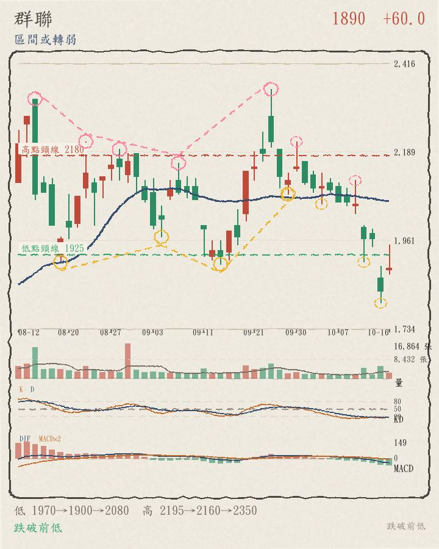
12:30 盤中 1890（+3.28%），比加權指數強 2.76 個百分點、跌破月線 2064.25，離高點頸線 2180 還差 13.3%，轉折還沒走出明顯方向。
- 月線位置：現價 1890 在月線 2064.25 之下（-8.4%）；5 日線 1975 也在月線之下（短均在下）；月線向下
- 量能：以已過交易時間推估，今天成交量約是 20 日均量的 1.13 倍（量增），比 20 日均量大一些；上漲又量增，量價配合
- 關鍵價位：已跌破前一個轉折低點；高點頸線 2180 還在現價上方 13.3%；前一交易日高點 1895（低於 0.3%）；今天盤中高點 1950（低於 3.1%）；今天盤中低點 1875（高於 0.8%）
- 轉折結構：低點 1970、1900、2080 與高點 2195、2160、2350 都沒有明顯遞增，屬於區間震盪或轉弱；還沒確認的轉折低點 10-13 1905、10-15 1800；還沒確認的轉折高點 09-30 2215、10-12 2115（圖上虛線小圈）
穩懋 3105 上櫃
499.5 -2.5（-0.50%）
區間或轉弱 盤中成交值 49.74 億・全榜第 43 名（上櫃第 8 名）・相對大盤 -1.02
好條件 2/8：月線向上、突破頸線
不好條件 4/8：今日下跌、相對大盤弱、在月線之下、跌破昨日低點
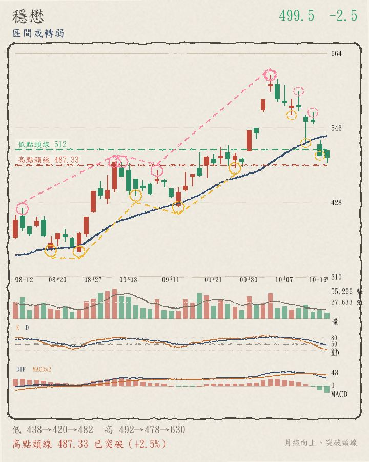
12:30 盤中 499.5（-0.50%），比加權指數弱 1.02 個百分點、跌破月線 531.15，已突破高點頸線 487.33，轉折還沒走出明顯方向。
- 月線位置：現價 499.5 在月線 531.15 之下（-6.0%）；5 日線 555.2 也在月線之上（短均在上）；月線向上
- 量能：以已過交易時間推估，今天成交量約是 20 日均量的 0.47 倍（量縮），比 20 日均量少很多
- 關鍵價位：高點頸線 487.33 已站上；前一交易日高點 526（低於 5.0%）；今天盤中高點 510（低於 2.1%）；今天盤中低點 491（高於 1.7%）
- 轉折結構：低點 438.5、420、482 與高點 492、478、630 都沒有明顯遞增，屬於區間震盪或轉弱；還沒確認的轉折低點 10-13 522、10-15 502；還沒確認的轉折高點 10-12 604、10-14 570（圖上虛線小圈）
世芯-KY 3661 上市
3715 +10.0（+0.27%）
區間或轉弱 盤中成交值 47.07 億・全榜第 44 名（上市第 36 名）・相對大盤 -0.25
好條件 1/8：月線向上
不好條件 2/8：相對大盤弱、在月線之下
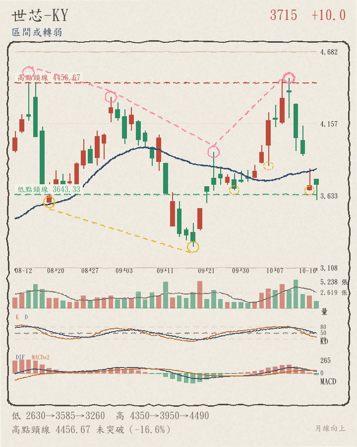
12:30 盤中 3715（+0.27%），比加權指數弱 0.25 個百分點、跌破月線 3810.25，離高點頸線 4456.67 還差 16.6%，轉折還沒走出明顯方向。
- 月線位置：現價 3715 在月線 3810.25 之下（-2.5%）；5 日線 4088 也在月線之上（短均在上）；月線向上
- 量能：以已過交易時間推估，今天成交量約是 20 日均量的 0.65 倍（量縮），比 20 日均量少很多；上漲但量縮，量價背離
- 關鍵價位：高點頸線 4456.67 還沒突破，差 16.6%；前一交易日高點 3830（低於 3.0%）；今天盤中高點 3755（低於 1.1%）；今天盤中低點 3600（高於 3.2%）
- 轉折結構：低點 2630、3585、3260 與高點 4350、3950、4490 都沒有明顯遞增，屬於區間震盪或轉弱；還沒確認的轉折低點 10-06 3850、10-15 3670；還沒確認的轉折高點 10-12 4490（圖上虛線小圈）
精材 3374 上櫃
436.5 -16.0（-3.54%）
底部墊高、未過前高 盤中成交值 45.9 億・全榜第 45 名（上櫃第 9 名）・相對大盤 -4.06
好條件 2/8：月線向上、底底高
不好條件 5/8：今日下跌、相對大盤弱、在月線之下、量增下跌（出貨）、跌破昨日低點
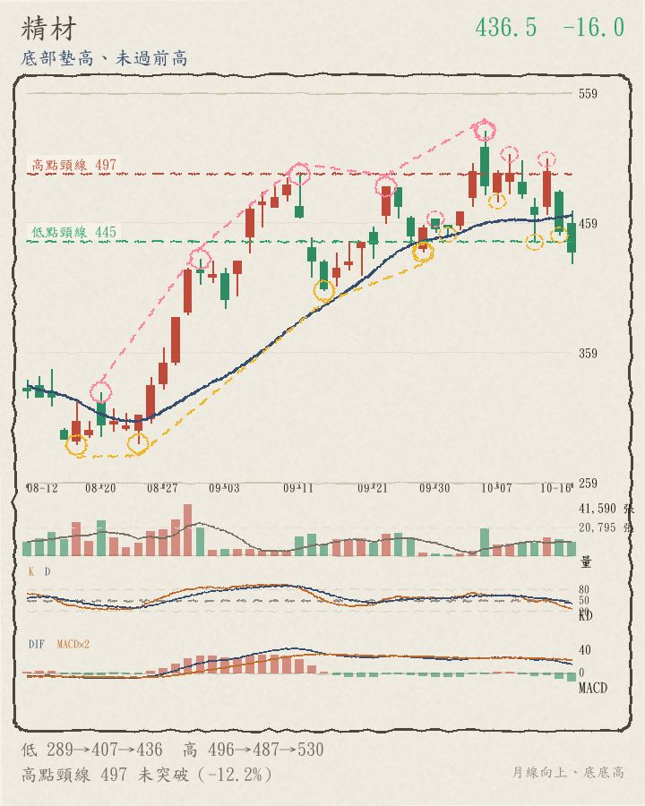
12:30 盤中 436.5（-3.54%），比加權指數弱 4.06 個百分點、跌破月線 463.425，離高點頸線 497 還差 12.2%，底部還在墊高（但高點沒同步創高）。
- 月線位置：現價 436.5 在月線 463.425 之下（-5.8%）；5 日線 479.1 也在月線之上（短均在上）；月線向上
- 量能：以已過交易時間推估，今天成交量約是 20 日均量的 1.32 倍（量增），比 20 日均量大不少；下跌卻量增，量價背離
- 關鍵價位：高點頸線 497 還沒突破，差 12.2%；前一交易日高點 484（低於 9.8%）；今天盤中高點 468（低於 6.7%）；今天盤中低點 427.5（高於 2.1%）
- 轉折結構：低點 289、407、436.5 墊高（底底高），但高點 496、487、530 沒有同步創高；還沒確認的轉折低點 10-13 444、10-15 449.5；還沒確認的轉折高點 10-08 512、10-14 508（圖上虛線小圈）
緯創 3231 上市
182 +6.0（+3.41%）
區間或轉弱 盤中成交值 44.9 億・全榜第 46 名（上市第 37 名）・相對大盤 +2.89
好條件 3/8：月線向上、相對大盤強、守住今日高檔（距今日高點 1% 內）
不好條件 2/8：跌破前低、在月線之下
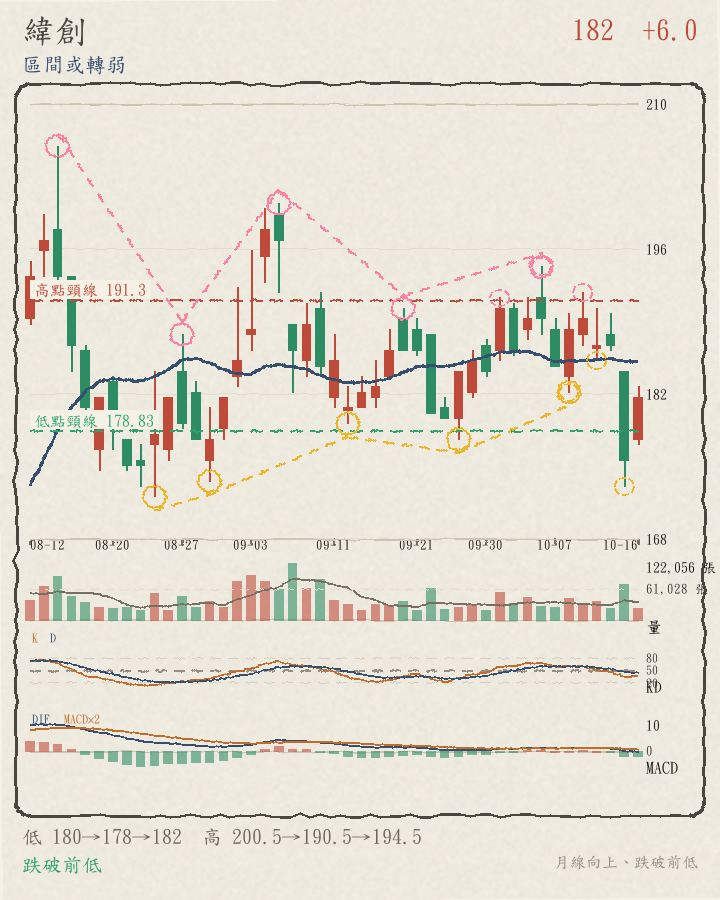
12:30 盤中 182（+3.41%），比加權指數強 2.89 個百分點、跌破月線 185.45，離高點頸線 191.3 還差 4.9%，轉折還沒走出明顯方向。
- 月線位置：現價 182 在月線 185.45 之下（-1.9%）；5 日線 185.6 也在月線之上（短均在上）；月線向上
- 量能：以已過交易時間推估，今天成交量約是 20 日均量的 0.92 倍（量平），比 20 日均量少一些
- 關鍵價位：已跌破前一個轉折低點；高點頸線 191.3 還在現價上方 4.9%；前一交易日高點 184.5（低於 1.4%）；今天盤中高點 183（低於 0.5%）；今天盤中低點 177.5（高於 2.5%）
- 轉折結構：低點 179.5、178、182.5 與高點 200.5、190.5、194.5 都沒有明顯遞增，屬於區間震盪或轉弱；還沒確認的轉折低點 10-13 185.5、10-15 173.5；還沒確認的轉折高點 10-06 194.5、10-12 192（圖上虛線小圈）
智邦 2345 上市
1980 +30.0（+1.54%）
高點墊高、底部不穩 盤中成交值 44.17 億・全榜第 47 名（上市第 38 名）・相對大盤 +1.02
好條件 4/8：站上月線、月線向上、頭頭高、相對大盤強
不好條件 0/8：無
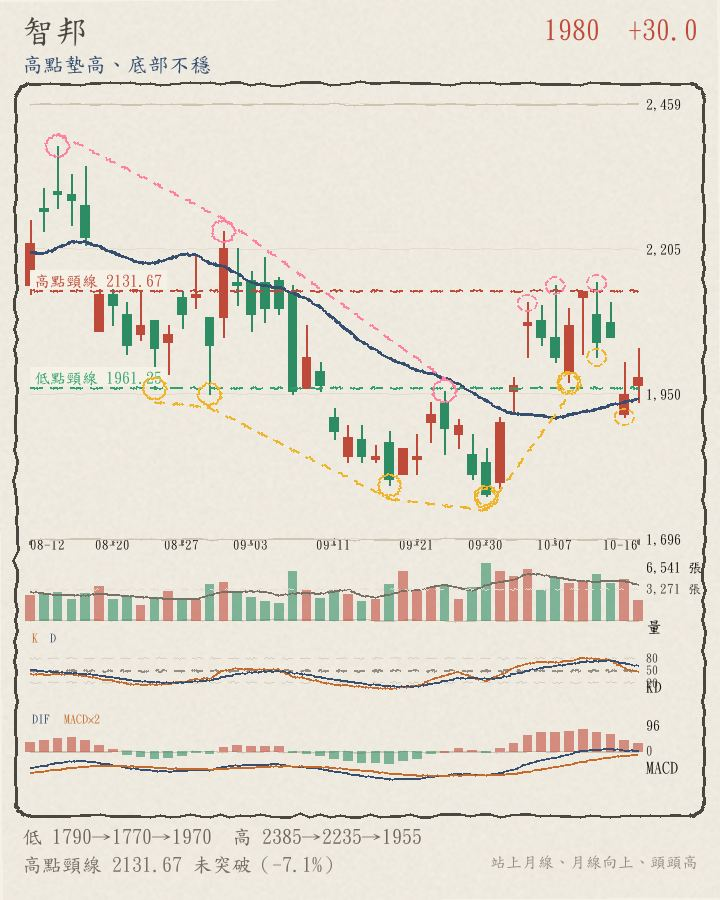
12:30 盤中 1980（+1.54%），比加權指數強 1.02 個百分點、站上月線 1935.25，離高點頸線 2131.67 還差 7.1%，高點還在墊高（但底部沒同步墊高）。
- 月線位置：現價 1980 在月線 1935.25 之上（+2.3%）；5 日線 2048 也在月線之上（短均在上）；月線向上
- 量能：以已過交易時間推估，今天成交量約是 20 日均量的 0.69 倍（量縮），比 20 日均量少很多；上漲但量縮，量價背離
- 關鍵價位：高點頸線 2131.67 還沒突破，差 7.1%；前一交易日高點 2005（低於 1.2%）；今天盤中高點 2030（低於 2.5%）；今天盤中低點 1935（高於 2.3%）
- 轉折結構：高點 2385、2235、1955 墊高（頭頭高），但低點 1790、1770、1970 沒有同步墊高；還沒確認的轉折低點 10-13 2015、10-15 1910；還沒確認的轉折高點 10-07 2140、10-13 2145（圖上虛線小圈）
欣銓 3264 上櫃
262.5 -5.5（-2.05%）
高點墊高、底部不穩 盤中成交值 44.06 億・全榜第 48 名（上櫃第 10 名）・相對大盤 -2.57
好條件 3/8：站上月線、月線向上、頭頭高
不好條件 2/8：今日下跌、相對大盤弱
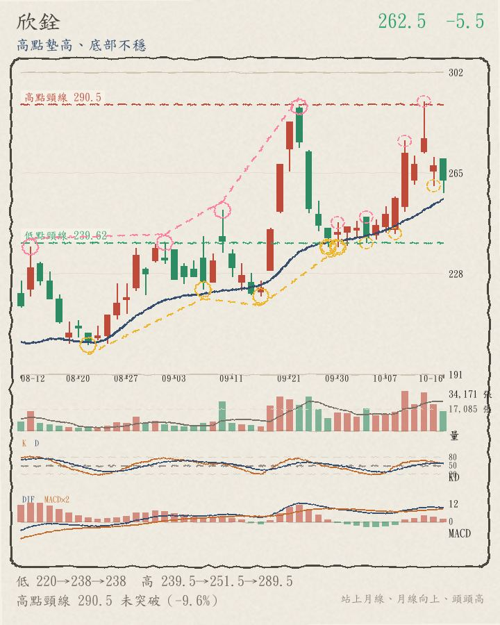
12:30 盤中 262.5（-2.05%），比加權指數弱 2.57 個百分點、站上月線 253.575，離高點頸線 290.5 還差 9.6%，高點還在墊高（但底部沒同步墊高）。
- 月線位置：現價 262.5 在月線 253.575 之上（+3.5%）；5 日線 268.6 也在月線之上（短均在上）；月線向上
- 量能：以已過交易時間推估，今天成交量約是 20 日均量的 1.19 倍（量增），比 20 日均量大不少；下跌卻量增，量價背離
- 關鍵價位：高點頸線 290.5 還沒突破，差 9.6%；前一交易日高點 271（低於 3.1%）；今天盤中高點 270.5（低於 3.0%）；今天盤中低點 258（高於 1.7%）
- 轉折結構：高點 239.5、251.5、289.5 墊高（頭頭高），但低點 220、238、238 沒有同步墊高；還沒確認的轉折低點 10-08 243、10-15 260.5；還沒確認的轉折高點 10-12 277、10-14 291.5（圖上虛線小圈）
川湖 2059 上市
9960 +240.0（+2.47%）
區間或轉弱 盤中成交值 41.13 億・全榜第 49 名（上市第 39 名）・相對大盤 +1.95
好條件 1/8：相對大盤強
不好條件 3/8：跌破前低、在月線之下、月線下彎
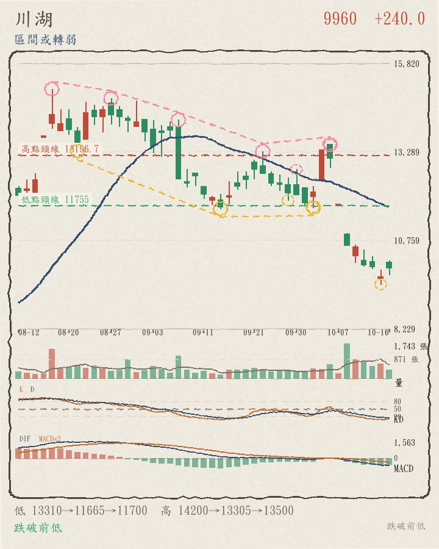
12:30 盤中 9960（+2.47%），比加權指數強 1.95 個百分點、跌破月線 11806.8，離高點頸線 13196.7 還差 24.5%，轉折還沒走出明顯方向。
- 月線位置：現價 9960 在月線 11806.8 之下（-15.6%）；5 日線 10196 也在月線之下（短均在下）；月線向下
- 量能：以已過交易時間推估，今天成交量約是 20 日均量的 1.03 倍（量平），跟 20 日均量差不多
- 關鍵價位：已跌破前一個轉折低點；高點頸線 13196.7 還在現價上方 24.5%；前一交易日高點 9920（高於 0.4%）；今天盤中高點 10175（低於 2.1%）；今天盤中低點 9775（高於 1.9%）
- 轉折結構：低點 13310、11665、11700 與高點 14200、13305、13500 都沒有明顯遞增，屬於區間震盪或轉弱；還沒確認的轉折低點 10-02 11700、10-15 9500；還沒確認的轉折高點 09-30 12785、10-06 13500（圖上虛線小圈）
力積電 6770 上市
67.4 +1.2（+1.81%）
區間或轉弱 盤中成交值 40.7 億・全榜第 50 名（上市第 40 名）・相對大盤 +1.29
好條件 1/8：相對大盤強
不好條件 4/8：跌破前低、在月線之下、貼近今日低點（1% 內）、月線下彎
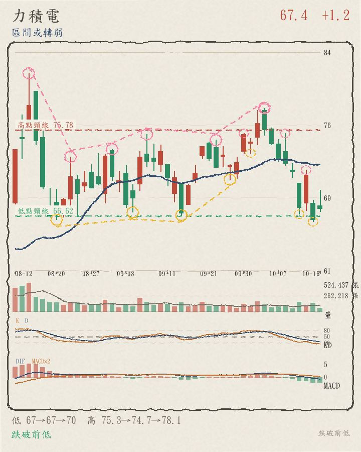
12:30 盤中 67.4（+1.81%），比加權指數強 1.29 個百分點、跌破月線 72.06，離高點頸線 75.78 還差 11.1%，轉折還沒走出明顯方向。
- 月線位置：現價 67.4 在月線 72.06 之下（-6.5%）；5 日線 69.66 也在月線之下（短均在下）；月線向下
- 量能：以已過交易時間推估，今天成交量約是 20 日均量的 0.69 倍（量縮），比 20 日均量少很多；上漲但量縮，量價背離
- 關鍵價位：已跌破前一個轉折低點；高點頸線 75.78 還在現價上方 11.1%；前一交易日高點 68.3（低於 1.3%）；今天盤中高點 69.4（低於 2.9%）；今天盤中低點 67.1（高於 0.4%）
- 轉折結構：低點 67、66.7、70.5 與高點 75.3、74.7、78.1 都沒有明顯遞增，屬於區間震盪或轉弱；還沒確認的轉折低點 10-13 66.8、10-15 66；還沒確認的轉折高點 10-08 75.4、10-14 71.5（圖上虛線小圈）
頎邦 6147 上櫃
210 -4.5（-2.10%）
底部墊高、未過前高 盤中成交值 39.55 億・全榜第 51 名（上櫃第 11 名）・相對大盤 -2.62
好條件 2/8：月線向上、底底高
不好條件 6/8：跌破前低、今日下跌、相對大盤弱、在月線之下、貼近今日低點（1% 內）、跌破昨日低點
12:30 盤中 210（-2.10%），比加權指數弱 2.62 個百分點、跌破月線 218.5，離高點頸線 229.33 還差 8.4%，底部還在墊高（但高點沒同步創高）。
- 月線位置：現價 210 在月線 218.5 之下（-3.9%）；5 日線 224.5 也在月線之上（短均在上）；月線向上
- 量能：以已過交易時間推估，今天成交量約是 20 日均量的 0.56 倍（量縮），比 20 日均量少很多
- 關鍵價位：已跌破前一個轉折低點；高點頸線 229.33 還在現價上方 8.4%；前一交易日高點 222（低於 5.4%）；今天盤中高點 216（低於 2.8%）；今天盤中低點 208（高於 1.0%）
- 轉折結構：低點 171、208、211 墊高（底底高），但高點 233、238、238 沒有同步創高；還沒確認的轉折低點 10-13 216.5、10-15 210.5；還沒確認的轉折高點 10-12 238、10-14 233（圖上虛線小圈）
華星光 4979 上櫃
520 -22.0（-4.06%）
區間或轉弱 盤中成交值 39.19 億・全榜第 52 名（上櫃第 12 名）・相對大盤 -4.58
好條件 0/8：無
不好條件 7/8：跌破前低、今日下跌、相對大盤弱、在月線之下、量增下跌（出貨）、跌破昨日低點、月線下彎
12:30 盤中 520（-4.06%），比加權指數弱 4.58 個百分點、跌破月線 571.7，離高點頸線 582.33 還差 10.7%，轉折還沒走出明顯方向。
- 月線位置：現價 520 在月線 571.7 之下（-9.0%）；5 日線 562.4 也在月線之下（短均在下）；月線向下
- 量能：以已過交易時間推估，今天成交量約是 20 日均量的 1.79 倍（爆量），比 20 日均量大不少；下跌卻量增，量價背離
- 關鍵價位：已跌破前一個轉折低點；高點頸線 582.33 還在現價上方 10.7%；前一交易日高點 574（低於 9.4%）；今天盤中高點 552（低於 5.8%）；今天盤中低點 510（高於 2.0%）
- 轉折結構：低點 572、501、545 與高點 658、650、622 都沒有明顯遞增，屬於區間震盪或轉弱；還沒確認的轉折低點 10-06 561、10-13 524；還沒確認的轉折高點 10-12 583、10-14 588（圖上虛線小圈）
萬潤 6187 上櫃
1425 +35.0（+2.52%）
高點墊高、底部不穩 盤中成交值 36.2 億・全榜第 53 名（上櫃第 13 名）・相對大盤 +2.00
好條件 5/8：站上月線、月線向上、頭頭高、相對大盤強、攻擊量（量增＋上漲）
不好條件 0/8：無

12:30 盤中 1425（+2.52%），比加權指數強 2.00 個百分點、站上月線 1364.25，離高點頸線 1436.67 還差 0.8%，高點還在墊高（但底部沒同步墊高）。
- 月線位置：現價 1425 在月線 1364.25 之上（+4.5%）；5 日線 1546 也在月線之上（短均在上）；月線向上
- 量能：以已過交易時間推估，今天成交量約是 20 日均量的 1.25 倍（量增），比 20 日均量大不少；上漲又量增，量價配合
- 關鍵價位：高點頸線 1436.67 還沒突破，差 0.8%；前一交易日高點 1480（低於 3.7%）；今天盤中高點 1455（低於 2.1%）；今天盤中低點 1385（高於 2.9%）
- 轉折結構：高點 1455、1435、1270 墊高（頭頭高），但低點 1185、1180、1180 沒有同步墊高；還沒確認的轉折低點 10-08 1490、10-15 1390；還沒確認的轉折高點 10-06 1590、10-13 1680（圖上虛線小圈）
富世達 6805 上市
2270 +155.0（+7.33%）
區間或轉弱 盤中成交值 35.64 億・全榜第 54 名（上市第 41 名）・相對大盤 +6.81
好條件 3/8：月線向上、相對大盤強、攻擊量（量增＋上漲）
不好條件 2/8：跌破前低、在月線之下
12:30 盤中 2270（+7.33%），比加權指數強 6.81 個百分點、跌破月線 2332.5，離高點頸線 2485 還差 8.7%，轉折還沒走出明顯方向。
- 月線位置：現價 2270 在月線 2332.5 之下（-2.7%）；5 日線 2232 也在月線之下（短均在下）；月線向上
- 量能：以已過交易時間推估，今天成交量約是 20 日均量的 1.29 倍（量增），比 20 日均量大不少；上漲又量增，量價配合
- 關鍵價位：已跌破前一個轉折低點；高點頸線 2485 還在現價上方 8.7%；前一交易日高點 2150（高於 5.6%）；今天盤中高點 2300（低於 1.3%）；今天盤中低點 2105（高於 7.8%）
- 轉折結構：低點 2010、2010、2300 與高點 2325、2750、2510 都沒有明顯遞增，屬於區間震盪或轉弱；還沒確認的轉折低點 10-13 2170、10-15 2065；還沒確認的轉折高點 10-05 2510、10-07 2510（圖上虛線小圈）
光寶科 2301 上市
265 -3.0（-1.12%）
區間或轉弱 盤中成交值 35.3 億・全榜第 55 名（上市第 42 名）・相對大盤 -1.64
好條件 0/8：無
不好條件 7/8：跌破前低、今日下跌、相對大盤弱、在月線之下、貼近今日低點（1% 內）、跌破昨日低點、月線下彎
12:30 盤中 265（-1.12%），比加權指數弱 1.64 個百分點、跌破月線 284.525，離高點頸線 302 還差 12.3%，轉折還沒走出明顯方向。
- 月線位置：現價 265 在月線 284.525 之下（-6.9%）；5 日線 282.5 也在月線之下（短均在下）；月線向下
- 量能：以已過交易時間推估，今天成交量約是 20 日均量的 1.14 倍（量增），比 20 日均量大一些；下跌卻量增，量價背離
- 關鍵價位：已跌破前一個轉折低點；高點頸線 302 還在現價上方 12.3%；前一交易日高點 274.5（低於 3.5%）；今天盤中高點 272（低於 2.6%）；今天盤中低點 263（高於 0.8%）
- 轉折結構：低點 271、278、278 與高點 328、299.5、304.5 都沒有明顯遞增，屬於區間震盪或轉弱；還沒確認的轉折低點 10-13 275、10-15 266.5；還沒確認的轉折高點 10-01 285、10-07 304.5（圖上虛線小圈）
長榮 2603 上市
267 +10.0（+3.89%）
上升趨勢（底底高＋頭頭高） 盤中成交值 35.17 億・全榜第 56 名（上市第 43 名）・相對大盤 +3.37
好條件 7/8：站上月線、月線向上、底底高、頭頭高、突破頸線、相對大盤強、攻擊量（量增＋上漲）
不好條件 0/8：無
12:30 盤中 267（+3.89%），比加權指數強 3.37 個百分點、站上月線 242.85，已突破高點頸線 241.7，轉折結構仍是底底高＋頭頭高。
- 月線位置：現價 267 在月線 242.85 之上（+9.9%）；5 日線 254.4 也在月線之上（短均在上）；月線向上
- 量能：以已過交易時間推估，今天成交量約是 20 日均量的 1.39 倍（量增），比 20 日均量大不少；上漲又量增，量價配合
- 關鍵價位：高點頸線 241.7 已站上；前一交易日高點 261（高於 2.3%）；今天盤中高點 270.5（低於 1.3%）；今天盤中低點 258.5（高於 3.3%）
- 轉折結構：低點 225.5、227、231 一路墊高、高點 240、245.5、244 也一路墊高，是底底高＋頭頭高；還沒確認的轉折低點 10-08 231、10-15 254.5；還沒確認的轉折高點 10-07 238、10-14 267.5（圖上虛線小圈）
群創 3481 上市
48.45 +0.1（+0.31%）
高點墊高、底部不穩 盤中成交值 35.05 億・全榜第 57 名（上市第 44 名）・相對大盤 -0.21
好條件 2/8：月線向上、頭頭高
不好條件 4/8：跌破前低、相對大盤弱、在月線之下、貼近今日低點（1% 內）
12:30 盤中 48.45（+0.31%），比加權指數弱 0.21 個百分點、跌破月線 50.462，離高點頸線 51.9 還差 6.6%，高點還在墊高（但底部沒同步墊高）。
- 月線位置：現價 48.45 在月線 50.462 之下（-4.0%）；5 日線 50.3 也在月線之下（短均在下）；月線向上
- 量能：以已過交易時間推估，今天成交量約是 20 日均量的 0.48 倍（量縮），比 20 日均量少很多；上漲但量縮，量價背離
- 關鍵價位：已跌破前一個轉折低點；高點頸線 51.9 還在現價上方 6.6%；前一交易日高點 50.3（低於 3.7%）；今天盤中高點 49.45（低於 2.0%）；今天盤中低點 48.2（高於 0.5%）
- 轉折結構：高點 51.6、52.2、56.2 墊高（頭頭高），但低點 48、46.25、48.55 沒有同步墊高；還沒確認的轉折低點 10-12 49.5、10-15 48.3；還沒確認的轉折高點 10-05 56.2、10-14 51.4（圖上虛線小圈）
貿聯-KY 3665 上市
2025 +10.0（+0.50%）
高點墊高、底部不穩 盤中成交值 34.06 億・全榜第 58 名（上市第 45 名）・相對大盤 -0.02
好條件 2/8：月線向上、頭頭高
不好條件 2/8：相對大盤弱、在月線之下
12:30 盤中 2025（+0.50%），比加權指數弱 0.02 個百分點、跌破月線 2295.25，離高點頸線 2378.33 還差 14.9%，高點還在墊高（但底部沒同步墊高）。
- 月線位置：現價 2025 在月線 2295.25 之下（-11.8%）；5 日線 2245 也在月線之下（短均在下）；月線向上
- 量能：以已過交易時間推估，今天成交量約是 20 日均量的 0.59 倍（量縮），比 20 日均量少很多；上漲但量縮，量價背離
- 關鍵價位：高點頸線 2378.33 還沒突破，差 14.9%；前一交易日高點 2150（低於 5.8%）；今天盤中高點 2050（低於 1.2%）；今天盤中低點 1980（高於 2.3%）
- 轉折結構：高點 2360、2375、2685 墊高（頭頭高），但低點 2095、1930、1810 沒有同步墊高；還沒確認的轉折低點 10-13 2215、10-15 2015；還沒確認的轉折高點 10-02 2670、10-08 2400（圖上虛線小圈）
京元電子 2449 上市
273 +1.0（+0.37%）
區間或轉弱 盤中成交值 33.21 億・全榜第 59 名（上市第 46 名）・相對大盤 -0.15
好條件 1/8：月線向上
不好條件 3/8：跌破前低、相對大盤弱、在月線之下
12:30 盤中 273（+0.37%），比加權指數弱 0.15 個百分點、跌破月線 292.925，離高點頸線 306.83 還差 11.0%，轉折還沒走出明顯方向。
- 月線位置：現價 273 在月線 292.925 之下（-6.8%）；5 日線 295.6 也在月線之上（短均在上）；月線向上
- 量能：以已過交易時間推估，今天成交量約是 20 日均量的 0.52 倍（量縮），比 20 日均量少很多；上漲但量縮，量價背離
- 關鍵價位：已跌破前一個轉折低點；高點頸線 306.83 還在現價上方 11.0%；前一交易日高點 279（低於 2.2%）；今天盤中高點 277.5（低於 1.6%）；今天盤中低點 270（高於 1.1%）
- 轉折結構：低點 259、253、284 與高點 283.5、330、310 都沒有明顯遞增，屬於區間震盪或轉弱；還沒確認的轉折低點 10-13 290.5、10-15 268；還沒確認的轉折高點 10-08 310、10-13 307（圖上虛線小圈）
藥華藥 6446 上市
1260 +55.0（+4.56%）
高點墊高、底部不穩 盤中成交值 31.73 億・全榜第 60 名（上市第 47 名）・相對大盤 +4.04
好條件 5/8：站上月線、頭頭高、突破頸線、相對大盤強、攻擊量（量增＋上漲）
不好條件 1/8：月線下彎
12:30 盤中 1260（+4.56%），比加權指數強 4.04 個百分點、站上月線 1184，已突破高點頸線 1236，高點還在墊高（但底部沒同步墊高）。
- 月線位置：現價 1260 在月線 1184 之上（+6.4%）；5 日線 1188 也在月線之上（短均在上）；月線向下
- 量能：以已過交易時間推估，今天成交量約是 20 日均量的 1.30 倍（量增），比 20 日均量大不少；上漲又量增，量價配合
- 關鍵價位：高點頸線 1236 已站上；前一交易日高點 1240（高於 1.6%）；今天盤中高點 1300（低於 3.1%）；今天盤中低點 1230（高於 2.4%）
- 轉折結構：高點 1240、1240、1235 墊高（頭頭高），但低點 1165、1125、1140 沒有同步墊高；還沒確認的轉折低點 10-13 1155、10-14 1155；還沒確認的轉折高點 10-08 1235、10-15 1240（圖上虛線小圈）
中探針 6217 上櫃
194.5 -0.5（-0.26%）
高點墊高、底部不穩 盤中成交值 31.69 億・全榜第 61 名（上櫃第 14 名）・相對大盤 -0.78
好條件 4/8：站上月線、月線向上、頭頭高、突破頸線
不好條件 4/8：今日下跌、相對大盤弱、量增下跌（出貨）、跌破昨日低點
12:30 盤中 194.5（-0.26%），比加權指數弱 0.78 個百分點、站上月線 176.425，已突破高點頸線 183.12，高點還在墊高（但底部沒同步墊高）。
- 月線位置：現價 194.5 在月線 176.425 之上（+10.2%）；5 日線 191.2 也在月線之上（短均在上）；月線向上
- 量能：以已過交易時間推估，今天成交量約是 20 日均量的 4.53 倍（爆量），比 20 日均量大不少；下跌卻量增，量價背離
- 關鍵價位：高點頸線 183.12 已站上；前一交易日高點 224.5（低於 13.4%）；今天盤中高點 206.5（低於 5.8%）；今天盤中低點 187（高於 4.0%）
- 轉折結構：高點 210.5、181.5、184 墊高（頭頭高），但低點 156、165.5、165 沒有同步墊高；還沒確認的轉折低點 10-08 165、10-15 195；還沒確認的轉折高點 10-06 183.5、10-15 224.5（圖上虛線小圈）
信驊 5274 上櫃
16345 +400.0（+2.51%）
區間或轉弱 盤中成交值 30.89 億・全榜第 62 名（上櫃第 15 名）・相對大盤 +1.99
好條件 1/8：相對大盤強
不好條件 2/8：在月線之下、月線下彎
12:30 盤中 16345（+2.51%），比加權指數強 1.99 個百分點、跌破月線 18621.5，離高點頸線 18381.7 還差 11.1%，轉折還沒走出明顯方向。
- 月線位置：現價 16345 在月線 18621.5 之下（-12.2%）；5 日線 17195 也在月線之下（短均在下）；月線向下
- 量能：以已過交易時間推估，今天成交量約是 20 日均量的 0.99 倍（量平），跟 20 日均量差不多
- 關鍵價位：高點頸線 18381.7 還沒突破，差 11.1%；前一交易日高點 16500（低於 0.9%）；今天盤中高點 16565（低於 1.3%）；今天盤中低點 15795（高於 3.5%）
- 轉折結構：低點 14600、17170、15975 與高點 19795、21800、19895 都沒有明顯遞增，屬於區間震盪或轉弱；還沒確認的轉折低點 10-13 16930、10-15 15750；還沒確認的轉折高點 10-12 18080、10-14 18465（圖上虛線小圈）
量平
↑ 回上方清單
台化 1326 上市
77.9 +0.9（+1.17%）
高點墊高、底部不穩 盤中成交值 30.57 億・全榜第 63 名（上市第 48 名）・相對大盤 +0.65
好條件 5/8：站上月線、月線向上、頭頭高、相對大盤強、攻擊量（量增＋上漲）
不好條件 0/8：無
12:30 盤中 77.9（+1.17%），比加權指數強 0.65 個百分點、站上月線 71.335，離高點頸線 78.65 還差 1.0%，高點還在墊高（但底部沒同步墊高）。
- 月線位置：現價 77.9 在月線 71.335 之上（+9.2%）；5 日線 78.94 也在月線之上（短均在上）；月線向上
- 量能：以已過交易時間推估，今天成交量約是 20 日均量的 1.43 倍（量增），比 20 日均量大不少；上漲又量增，量價配合
- 關鍵價位：高點頸線 78.65 還沒突破，差 1.0%；前一交易日高點 86.1（低於 9.5%）；今天盤中高點 79（低於 1.4%）；今天盤中低點 75.5（高於 3.2%）
- 轉折結構：高點 61.7、78.2、69.2 墊高（頭頭高），但低點 56.1、64.9、63.8 沒有同步墊高；還沒確認的轉折低點 10-13 74、10-15 77；還沒確認的轉折高點 10-08 79.1、10-15 86.1（圖上虛線小圈）
大毅 2478 上市
136 -6.0（-4.23%）
高點墊高、底部不穩 盤中成交值 30.36 億・全榜第 64 名（上市第 49 名）・相對大盤 -4.75
好條件 4/8：站上月線、月線向上、頭頭高、突破頸線
不好條件 4/8：今日下跌、相對大盤弱、量增下跌（出貨）、貼近今日低點（1% 內）
12:30 盤中 136（-4.23%），比加權指數弱 4.75 個百分點、站上月線 125.1，已突破高點頸線 125.5，高點還在墊高（但底部沒同步墊高）。
- 月線位置：現價 136 在月線 125.1 之上（+8.7%）；5 日線 133.7 也在月線之上（短均在上）；月線向上
- 量能：以已過交易時間推估，今天成交量約是 20 日均量的 8.00 倍（爆量），比 20 日均量大不少；下跌卻量增，量價背離
- 關鍵價位：高點頸線 125.5 已站上；前一交易日高點 150（低於 9.3%）；今天盤中高點 149.5（低於 9.0%）；今天盤中低點 135（高於 0.7%）
- 轉折結構：高點 124、124、138.5 墊高（頭頭高），但低點 114.5、114、116.5 沒有同步墊高；還沒確認的轉折低點 10-06 125.5、10-13 122.5；還沒確認的轉折高點 10-07 138.5、10-15 150（圖上虛線小圈）
啟碁 6285 上市
258.5 +17.5（+7.26%）
區間或轉弱 盤中成交值 29.68 億・全榜第 65 名（上市第 50 名）・相對大盤 +6.74
好條件 4/8：站上月線、月線向上、相對大盤強、攻擊量（量增＋上漲）
不好條件 0/8：無
12:30 盤中 258.5（+7.26%），比加權指數強 6.74 個百分點、站上月線 239.8，離高點頸線 262.7 還差 1.6%，轉折還沒走出明顯方向。
- 月線位置：現價 258.5 在月線 239.8 之上（+7.8%）；5 日線 252.1 也在月線之上（短均在上）；月線向上
- 量能：以已過交易時間推估，今天成交量約是 20 日均量的 2.67 倍（爆量），比 20 日均量大不少；上漲又量增，量價配合
- 關鍵價位：高點頸線 262.7 還沒突破，差 1.6%；前一交易日高點 249.5（高於 3.6%）；今天盤中高點 263（低於 1.7%）；今天盤中低點 241.5（高於 7.0%）
- 轉折結構：低點 225.5、233.5、216 與高點 255、240.5、270 都沒有明顯遞增，屬於區間震盪或轉弱；還沒確認的轉折低點 10-13 244、10-15 240.5；還沒確認的轉折高點 10-06 270、10-12 263.5（圖上虛線小圈）
金山電 8042 上櫃
142.5 -5.5（-3.72%）
上升趨勢（底底高＋頭頭高） 盤中成交值 26.72 億・全榜第 66 名（上櫃第 16 名）・相對大盤 -4.24
好條件 5/8：站上月線、月線向上、底底高、頭頭高、突破頸線
不好條件 4/8：今日下跌、相對大盤弱、量增下跌（出貨）、跌破昨日低點

12:30 盤中 142.5（-3.72%），比加權指數弱 4.24 個百分點、站上月線 122.504，已突破高點頸線 125，轉折結構仍是底底高＋頭頭高。
- 月線位置：現價 142.5 在月線 122.504 之上（+16.3%）；5 日線 146.5 也在月線之上（短均在上）；月線向上
- 量能：以已過交易時間推估，今天成交量約是 20 日均量的 2.41 倍（爆量），比 20 日均量大不少；下跌卻量增，量價背離
- 關鍵價位：高點頸線 125 已站上；前一交易日高點 166（低於 14.2%）；今天盤中高點 156（低於 8.7%）；今天盤中低點 140（高於 1.8%）
- 轉折結構：低點 100、107.5、110 一路墊高、高點 115、123.5、117.177 也一路墊高，是底底高＋頭頭高；還沒確認的轉折低點 10-06 117；還沒確認的轉折高點 10-05 126.5、10-15 166（圖上虛線小圈）
精測 6510 上櫃
3145 +240.0（+8.26%）
區間或轉弱 盤中成交值 26.42 億・全榜第 67 名（上櫃第 17 名）・相對大盤 +7.74
好條件 4/8：突破頸線、相對大盤強、攻擊量（量增＋上漲）、守住今日高檔（距今日高點 1% 內）
不好條件 2/8：在月線之下、月線下彎
12:30 盤中 3145（+8.26%），比加權指數強 7.74 個百分點、跌破月線 3238.75，已突破高點頸線 3140，轉折還沒走出明顯方向。
- 月線位置：現價 3145 在月線 3238.75 之下（-2.9%）；5 日線 3229 也在月線之下（短均在下）；月線向下
- 量能：以已過交易時間推估，今天成交量約是 20 日均量的 1.21 倍（量增），比 20 日均量大不少；上漲又量增，量價配合
- 關鍵價位：高點頸線 3140 已站上；前一交易日高點 3105（高於 1.3%）；今天盤中高點 3160（低於 0.5%）；今天盤中低點 2825（高於 11.3%）
- 轉折結構：低點 3165、2960、3000 與高點 3935、3775、3580 都沒有明顯遞增，屬於區間震盪或轉弱；還沒確認的轉折低點 10-08 3000、10-15 2905；還沒確認的轉折高點 10-12 3580、10-14 3385（圖上虛線小圈）
雙鴻 3324 上櫃
1435 +25.0（+1.77%）
高點墊高、底部不穩 盤中成交值 24.73 億・全榜第 68 名（上櫃第 18 名）・相對大盤 +1.25
好條件 3/8：月線向上、頭頭高、相對大盤強
不好條件 1/8：在月線之下
12:30 盤中 1435（+1.77%），比加權指數強 1.25 個百分點、跌破月線 1507，離高點頸線 1572.5 還差 8.7%，高點還在墊高（但底部沒同步墊高）。
- 月線位置：現價 1435 在月線 1507 之下（-4.8%）；5 日線 1487 也在月線之下（短均在下）；月線向上
- 量能：以已過交易時間推估，今天成交量約是 20 日均量的 0.55 倍（量縮），比 20 日均量少很多；上漲但量縮，量價背離
- 關鍵價位：高點頸線 1572.5 還沒突破，差 8.7%；前一交易日高點 1465（低於 2.0%）；今天盤中高點 1460（低於 1.7%）；今天盤中低點 1395（高於 2.9%）
- 轉折結構：高點 1080、1505、1750 墊高（頭頭高），但低點 1240、1480、1395 沒有同步墊高；還沒確認的轉折低點 10-08 1395、10-15 1400；還沒確認的轉折高點 10-05 1575、10-08 1570（圖上虛線小圈）
力旺 3529 上櫃
2765 +110.0（+4.14%）
上升趨勢（底底高＋頭頭高） 盤中成交值 21.68 億・全榜第 69 名（上櫃第 19 名）・相對大盤 +3.62
好條件 4/8：月線向上、底底高、頭頭高、相對大盤強
不好條件 1/8：在月線之下
12:30 盤中 2765（+4.14%），比加權指數強 3.62 個百分點、跌破月線 2988.5，離高點頸線 2975 還差 7.1%，轉折結構仍是底底高＋頭頭高。
- 月線位置：現價 2765 在月線 2988.5 之下（-7.5%）；5 日線 2821 也在月線之下（短均在下）；月線向上
- 量能：以已過交易時間推估，今天成交量約是 20 日均量的 0.81 倍（量平），比 20 日均量少很多；上漲但量縮，量價背離
- 關鍵價位：高點頸線 2975 還沒突破，差 7.1%；前一交易日高點 2740（高於 0.9%）；今天盤中高點 2795（低於 1.1%）；今天盤中低點 2675（高於 3.4%）
- 轉折結構：低點 1995、2090、2530 一路墊高、高點 2720、2875、3635 也一路墊高，是底底高＋頭頭高；還沒確認的轉折低點 10-13 2690、10-15 2655；還沒確認的轉折高點 09-30 3635、10-14 2955（圖上虛線小圈）
鈊象 3293 上櫃
794 -17.0（-2.10%）
區間或轉弱 盤中成交值 20.97 億・全榜第 70 名（上櫃第 20 名）・相對大盤 -2.62
好條件 2/8：站上月線、月線向上
不好條件 4/8：今日下跌、相對大盤弱、量增下跌（出貨）、跌破昨日低點
12:30 盤中 794（-2.10%），比加權指數弱 2.62 個百分點、站上月線 766.45，離高點頸線 808.75 還差 1.8%，轉折還沒走出明顯方向。
- 月線位置：現價 794 在月線 766.45 之上（+3.6%）；5 日線 800.8 也在月線之上（短均在上）；月線向上
- 量能：以已過交易時間推估，今天成交量約是 20 日均量的 1.68 倍（爆量），比 20 日均量大不少；下跌卻量增，量價背離
- 關鍵價位：高點頸線 808.75 還沒突破，差 1.8%；前一交易日高點 817（低於 2.8%）；今天盤中高點 808（低於 1.7%）；今天盤中低點 775（高於 2.5%）
- 轉折結構：低點 700、687、771 與高點 714、714、819 都沒有明顯遞增，屬於區間震盪或轉弱；還沒確認的轉折低點 10-07 771、10-15 800；還沒確認的轉折高點 10-12 803、10-15 817（圖上虛線小圈）